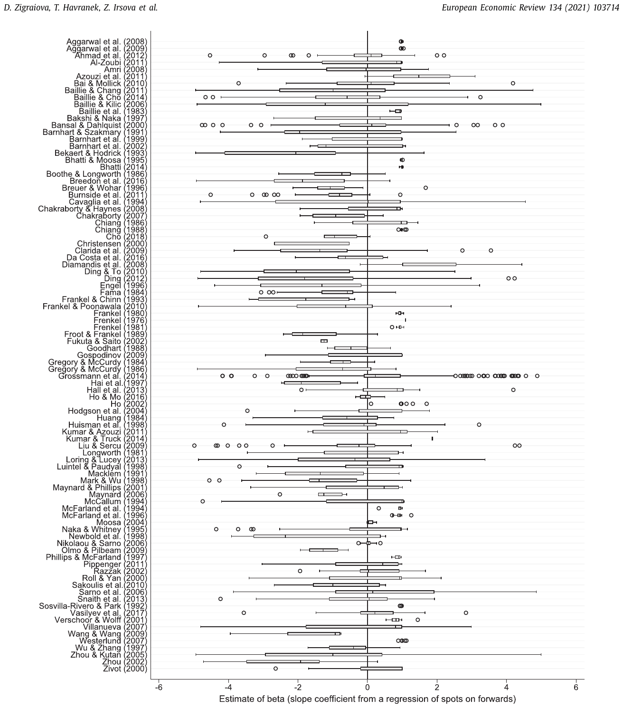
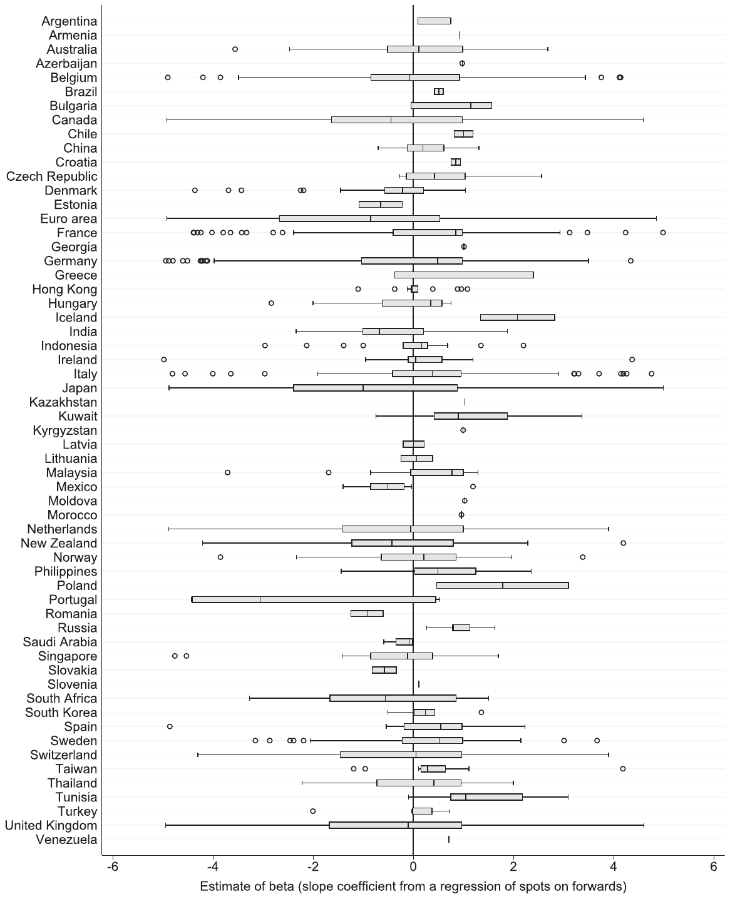
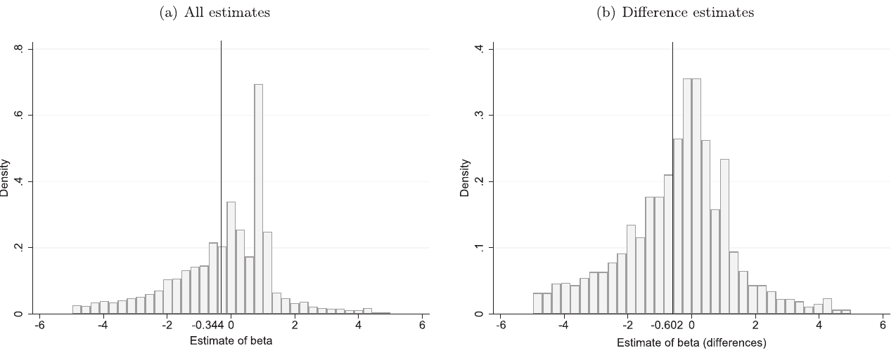
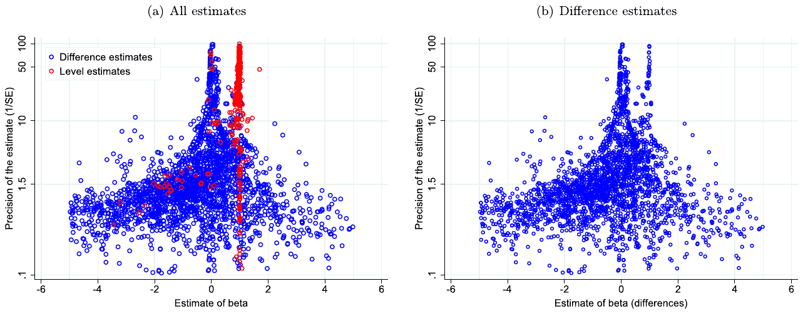
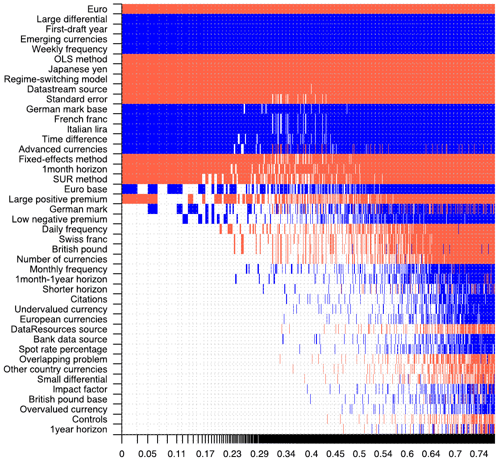

How Puzzling Is the Forward Premium Puzzle? A Meta-Analysis
Diana Zigraiova, Tomas Havranek, Zuzana Irsova, and Jiri Novak (2021), "How Puzzling Is the Forward Premium Puzzle? A Meta-Analysis." European Economic Review 134, 103714. https://doi.org/10.1016/j.euroecorev.2021.103714.
Diana Zigraiova a,b, Tomas Havranek b,c, Zuzana Irsova b, Jiri Novak b,*
a European Stability Mechanism, Luxembourg
b Institute of Economic Studies, Faculty of Social Sciences, Charles University, Prague, Czech Republic
c Centre for Economic Policy Research (CEPR)
* Corresponding author at: Institute of Economic Studies, Faculty of Social Sciences, Charles University, Jiri Novak, Opletalova 1606/26, CZ-110 00 Praha 1, Czech Republic. Tel.: +420 222 112 314. E-mail address: jiri.novak@fsv.cuni.cz (J. Novak).
An online appendix with data, code, and additional material is available at meta-analysis.cz/forward. We thank the participants of the MAER-Net Colloquium in Greenwich, 2019, and seminar participants at the European Stability Mechanism and the Crawford School of Public Policy, Australian National University, for their helpful comments. Diana Zigraiova acknowledges support from the European Union's 2020 Research and Innovation Staff Exchange programme under the Marie Sklodowska-Curie grant agreement #681228 and Charles University (project Primus/17/HUM/16). Tomas Havranek and Zuzana Irsova acknowledge support from the Czech Science Foundation (project 19-26812X). Jiri Novak acknowledges support from the Czech Science Foundation (project 21-09231S). The views expressed here are ours and not necessarily those of our employers.
Article history: Received 31 July 2020; Revised 16 March 2021; Accepted 17 March 2021; Available online 20 March 2021
JEL classification: C83, F31, G14
Abstract
A key theoretical prediction in financial economics is that under risk neutrality and rational expectations a currency's forward rates should form unbiased predictors of future spot rates. Yet scores of empirical studies report negative slope coefficients from regressions of spot rates on forward rates. We collect 3643 estimates from 91 research articles and using recently developed techniques investigate the effect of publication and misspecification biases on the reported results. Correcting for these biases yields slope coefficients in the intervals (0.23,0.45) and (0.95,1.16) for the currencies of developed and emerging countries respectively, which implies that empirical evidence is in line with the theoretical prediction for emerging economies and less puzzling than commonly thought for developed economies. Our results also suggest that the coefficients are systematically influenced by the choice of data, numeraire currency, and estimation method.
Keywords: Forward rate bias, Uncovered interest parity, Meta-analysis, Publication bias, Model uncertainty
1. Introduction
If forward exchange rates systematically differ from future spot rates, money can be made on the difference: a risk-neutral agent with rational expectations can exploit the inefficiency and hence, supposedly, the anomaly should disappear. It is therefore puzzling that the forward anomaly has been found again and again for dozens of different currencies, time periods, and identification designs. Yet the exact results in the literature vary, and the null hypothesis is not rejected universally. The anomaly is commonly labeled "forward premium puzzle," because most studies do not estimate the relationship in levels (future spot rates on forward rates), but subtract current spot rates from both sides of the regression. Thus one obtains currency depreciation on the left-hand side and the forward discount on the right-hand side. The puzzle is that, according to many studies, depreciation is positively associated with forward premium, not a discount. So not only do researchers typically reject the hypothesis of the coefficient (we will call it ) being equal to one, but often they find a statistically significant negative coefficient. If the covered interest parity holds, this result is equivalent to the finding that currencies with higher interest rates tend to appreciate. Thus tests of forward rate unbiasedness are closely related to tests of the uncovered interest parity.
The forward premium puzzle is a traditional problem in international economics and finance; as such, it has attracted the attention of dozens of researchers during the last four decades. Yet still no clear-cut consensus emerges on whether the puzzle really exists or whether it represents a statistical artifact, how large the departure from the null hypothesis is, and how material the implications are in practice. Important prospective solutions to the forward premium puzzle put forward in the last decade include infrequent portfolio decisions (Bacchetta and van Wincoop, 2010), investor overconfidence (Burnside et al., 2011), omitted variables (Pippenger, 2011), sentiment (Yu, 2013), sovereign default risk (Coudert and Mignon, 2013), order flow (Breedon et al., 2016), rare disasters (Farhi and Gabaix, 2016), and monetary policy changes (Kim et al., 2017; Park and Park, 2017; Coulibaly and Kempf, 2019), a string of efforts that highlights persistent research activity in the field. What the literature lacks is a quantitative synthesis, or meta-analysis, that would take stock of the enormous body of work and shed light on potential biases and patterns that are impossible to detect in individual studies considered separately. That is what we attempt to achieve in this paper.
Meta-analysis brings value added in four key areas. First, it can quantify the results that are qualitatively well established in the literature but their size varies across studies. For example, most of the literature agrees that the coefficient depends on country characteristics (Bansal and Dahlquist, 2000; Frankel and Poonawala, 2010) and monetary policy rules (McCallum, 1994; Park and Park, 2017). Because meta-analysis uses many results across a large number of datasets, it can provide more robust estimates for these patterns. Second, individual studies estimating use different methodologies, and meta-analysis can quantify whether different methods have systematic effects on the results. Again, a large number of results from many different datasets is crucial for robust inference on the impact of methodology. Third, an important aspect of meta-analysis is the identification of a plausible range for based on the entire corpus of empirical literature, because results from individual studies vary widely even for the same currencies. Finally, and perhaps most importantly, meta-analysis allows us to correct the literature for potential publication selection bias, which is impossible to do in individual studies.
Publication bias is the tendency of authors, editors, and referees to prefer results that are statistically significant and consistent with previous findings or underlying theory. The bias has been discussed, among others, by Stanley (2001), Stanley (2005), Stanley and Doucouliagos (2010), Havranek (2015), Brodeur et al. (2016), Bruns and Ioannidis (2016), Stanley and Doucouliagos (2017), Christensen and Miguel (2018), Brodeur et al. (2020), and Blanco-Perez and Brodeur (2020). Ioannidis et al. (2017) show that publication bias looms large in economics and finance, exaggerating the mean reported coefficient twofold. That is not to say the bias always arises intentionally: for better or worse, many researchers use statistical significance as an implicit indicator of importance, and select the results for publication accordingly without an intention to inflate their results. A useful analogy appears in McCloskey and Ziliak (2019), who compare publication bias to the Lombard effect in psychoacoustics, when speakers involuntarily increase their effort with increasing noise. (For example, one would instinctively talk louder at a noisy party, without necessarily realizing so.) With large imprecision given by noisy data or inefficient estimation techniques, researchers may unintentionally try harder to search through potential specifications in order to find effects that are interesting, that produce sufficiently large t-statistics. Even if no intentional inflation of research results occurs, a correlation between estimates and the corresponding standard errors arises.
We test for publication bias using the recently developed techniques by Ioannidis et al. (2017, weighted average of adequately powered estimates), Andrews and Kasy (2019, selection model), Bom and Rachinger (2019, endogenous kink), and Furukawa (2020, stem-based technique), which are all, to some extent, based on the Lombard effect, but allow for a nonlinear relationship between the magnitude of publication bias and the size of the standard error. We also use a brand new p-uniform* technique (van Aert and van Assen, 2021) that does not rely on the Lombard effect but uses the distribution of p-values. Our results based on these techniques suggest substantial publication bias. The corrected mean estimates for the average currency vary between 0.2 and 0.8 depending on the method, far from the simple arithmetic average of -0.6 computed from all the reported estimates. The pattern we observe in the literature is thus consistent with a breed of publication bias called confirmation bias, the tendency to publish results that corroborate the famous finding on the negative coefficient by Fama (1984) rather than estimates that point in the opposite direction. Thus, correcting the literature for publication bias makes the forward premium puzzle look much less puzzling than previously suggested.
We further explore how the published estimates vary with the choice of data samples and estimation methodology. Various studies use data on different currency pairs sourced from different time periods, use different estimation techniques, and are published in journals of different reputation. For example, Froot and Thaler (1990) collected 75 such estimates published until the end of the 1980s and reported their mean to equal -0.88. Fig. 1 shows that even without any correction for a potential publication bias the estimates from the differences regression exhibit a tendency to increase over time, starting with values around -1 in the 1980s and approaching values close to 0 at the end of the 2010s. To capture the context in which individual estimates are obtained, we collect 42 corresponding variables and then regress the reported estimates on these variables. Because of model uncertainty and collinearity inherent in such an exercise, we cannot place all the 42 variables into one regression, but have to use model averaging techniques that run millions of different regressions with various combinations of the 42 variables and then weight these models according to fit and complexity. We employ both Bayesian (Eicher et al., 2011; Steel, 2020) and frequentist (Hansen, 2007; Amini and Parmeter, 2012) model averaging.
Figure 1. Do estimates of increase with time? Notes: The horizontal axis denotes the year when the first version of the paper appeared in Google Scholar. The solid line represents a linear trend and the surrounding shaded area shows the corresponding 95% confidence band. Only difference estimates (Eq. 3) are included.
Our results suggest that several data, method, and publication characteristics systematically affect the reported estimates. The most robust findings concern differences among individual currencies. The estimates for the currencies of emerging economies tend to be much larger than estimates for developed economies, even if we control for other features in which studies vary. This finding corroborates that of Frankel and Poonawala (2010), who also report that much less evidence exists for the forward premium puzzle in emerging economies compared to developed countries. Moreover, we also find substantially above-average estimates for the former French franc and Italian lira, while substantially below-average estimates for the euro, Japanese yen, and Swiss franc. Thus even among the currencies of developed countries the less risky ones (as measured by historical risk premia) are associated with more evidence of the puzzle. Taken together, our results support the conclusion of Frankel and Poonawala (2010) that a time-varying exchange risk premium does not represent a plausible explanation of the forward premium puzzle. Because larger risk premia are typically more volatile, the currencies of emerging countries and the riskier among developed countries should show more evidence for the puzzle if time-varying risk premia was an underlying explanation.
As the bottom line of our analysis we compute an implied that uses all the available results reported in the literature but, aside from correcting for publication bias, gives more weight to estimates that are based on arguably more reliable and larger datasets, employ modern estimation techniques, and are published in the best journals. The implied is constructed using the parameters from model averaging and choosing values for each variable (for example, sample maximum for data size and the impact factor of the journal in which the study was published). We obtain an interval of (0.23,0.45) for the currencies of developed economies and (0.95,1.16) for emerging economies. Thus, exploiting the heterogeneity of published studies and correcting for the publication selection bias produces estimates which suggest that for many currencies the forward premium puzzle is less puzzling than previously thought. For emerging economy currencies the estimated values are very close to the theoretical prediction of 1. For developed economy currencies the estimated values are well below 1; nevertheless, in contrast to the common interpretation of prior findings it is positive. Even after correcting for publication and misspecification biases we document negative estimates the Swiss franc (-0.14,0.08), the Japanese yen (-0.47,-0.25), and especially for the euro (-0.79,-0.57). Meta-analysis is thus no panacea, and there remains scope for other explanations to the puzzle than publication bias.
2. Testing forward rate unbiasedness
In this section we briefly describe how the coefficient is typically estimated in the literature; further details are provided in Section 5 and in the studies quoted in this section. We start with the straightforward theoretical relationship between forward and future spot rates. The forward rate should differ from the expected spot exchange rate by a premium , which is a compensation for the perceived risk of holding different currencies based on information available at time . This can be written in logarithms as:
where is the forward value of the spot exchange rate for a contract signed in period that expires periods in the future.
Since the expectation term in Eq. 1 is not directly observable, researchers typically invoke rational expectations. Coupled with the assumption of risk neutrality we arrive at the following regression:
In practice, however, researchers often subtract from both sides of Eq. 2:
Expressing the relationship as shown in Eq. (3) has two benefits: i) both sides of the equation can now be typically considered stationary, ii) both sides also have an intuitive interpretation in percentage points, the left-hand side denoting depreciation, the right-hand side representing the forward discount. For the forward rate unbiasedness hypothesis to hold, and thus for the absence of the forward premium puzzle, should equal 0, should equal 1, and should be serially uncorrelated. Therefore, strictly speaking, testing of market efficiency involves testing a joint hypothesis. Nevertheless, the joint hypothesis is rarely tested in practice for the following three reasons. First, the slope coefficient is what matters for the profitability of carry trades. Second, even from the academic point of view, most of the researchers are more interested in the slope coefficient than the intercept because the slope coefficient determines the forecasting power of forward rates. This forecasting power is important e.g. for the models used by central banks. Third, most researchers find a negative estimated coefficient for , which allows them to reject the forward rate unbiasedness hypothesis without looking at the intercept. Because most researchers focus on the slope coefficient , it is also our focus in this meta-analysis.
A large body of literature has had troubles confirming that equals 1. What is more, researchers frequently find that is zero or even negative (e.g., Backus et al., 1993; Hai et al., 1997; Bekaert, 1995; Byers and Peel, 1991; MacDonald and Taylor, 1990; McFarland et al., 1994; Backus et al., 2010). Froot and Thaler (1990), on the basis of 75 published regressions, compute that the average is equal to -0.88. Moreover, under covered interest parity we the relationship can be re-written as shown in Eq. (4):
where denotes the logarithm of one plus the interest rate paid on domestic assets for periods while applies to the rate paid on foreign assets. So Eq. 3 can be also thought of as a test of uncovered interest parity, similarly rejected by many published studies.
The literature has attempted to explain the frequent rejection of the null hypothesis that equals 1 in various ways. First, some authors attribute it solely to statistical considerations. It is only correct to regress the change in the spot exchange rate on the forward premium in Eq. 3 if both variables are stationary. The forward premium thus needs to be integrated of order zero as well. Goodhart et al. (1997) attest that Eq. 3 would be misspecified and the measured value would be biased towards zero if forward premium was not I(0). Crowder (1994) fails to reject the presence of a unit root in the forward premium series while Baillie and Bollerslev (1994) find forward premiums to be fractionally integrated processes. Second, Fama (1984) explains the frequent rejection of the null hypothesis by highly variable rational expectations risk premia in Eq. 3. Numerous other studies support this result: for example, Domowitz and Hakkio (1985), Wolf (1987) and Baillie and Bollerslev (1989). On the other hand, Frankel (1982), Frankel (1986) and Frankel and Froot (1987) do not confirm the presence of significant risk premia and report instead that the empirical rejection of the unbiasedness hypothesis implies that expectations are generally not rational due to excessive speculations.
While the aforementioned explanations for the finding of the forward premium puzzle are the most prominent ones, others have been put forward in the literature. McCallum (1994) attributes the rejection of the hypothesis to the fact that monetary authorities aim to avoid sudden exchange rate changes and thus smooth interest rates. As a result, tests of forward unbiasedness suffer from the absence of an equation that would take into account the behavior of the monetary authority. Furthermore, the theory behind the forward rate unbiasedness does not indicate whether long-term or short-term interest rates should be used or whether using T-bill rates as opposed to rates on commercial papers should matter. To address this issue, Razzak (2002) performs the test using one-year forward exchange rates instead of one-month rates and finds support for the null hypothesis when exchange rates are measured in US dollars. Nevertheless, no such support for the hypothesis emerges when other currencies are used for measuring exchange rates. In a similar vein, studies by Mussa (1979), Chinn and Meredith (2004), and Nadal De Simone and Razzak (1999) corroborate that long-term rates are more suitable for explaining the movements of spot exchange rates in tests of forward rate unbiasedness.
The exchange rate regime, time period, stage of a country's development, and data contamination have also appeared to matter for the testing of the hypothesis. Flood and Rose (1996) offer evidence that negative estimates of hold only for floating exchange rate regimes. Using data for the European Monetary System they show that a large part of the forward discount puzzle vanishes for fixed exchange rate regimes. Frankel and Poonawala (2010) show that for emerging market currencies there is a smaller bias in the estimated . The coefficient is on average positive and never significantly less than zero. The study by Chiang (1988) indicates that empirical evidence against the forward rate unbiasedness hypothesis might disappear if the regression parameters are allowed to vary in time. As for data contamination, Cornell (1989) argues that estimates of the slope coefficient are biased towards due to data mismatch. He suspects that most studies do not find exactly the future spot exchange rate that corresponds to the forward rate in their data and proposes the use of a lagged forward discount as the right-hand-side variable in Eq. 3 to deal with this problem. Using this technique Cornell (1989) cannot reject the forward rate unbiasedness for the Canadian dollar/US dollar rate. He, however, rejects the hypothesis for other currencies relative to the US dollar. Moreover, following the recommendation put forward by Cornell (1989), Bekaert and Hodrick (1993) investigate the unbiasedness hypothesis for the mark, pound and yen relative to the US dollar and find significantly negative. Given the conflicting findings in the literature, it is surprising that no quantitative synthesis of the empirical evidence has been conducted. In the next section we describe the first step in such a meta-analysis, data collection.
3. Data
We use Google Scholar to search for studies testing the forward rate unbiasedness hypothesis. Google's algorithm goes through the full text of studies, thus increasing the coverage of suitable published estimates, irrespective of the precise formulation of the study's title, abstract, and keywords. This is the key advantage in contrast to other databases commonly used in research synthesis, such as the Web of Science. Our search query contains expressions "forward rate unbiasedness," "forward premium puzzle," "forward discount puzzle," "forward premium anomaly," "foreign exchange efficiency," and "forward rate spot rate." We terminate the search on July 31, 2018, and do not add any new studies beyond that date.1 Our search strategy is described in more detail in the online appendix. We follow the reporting guidelines for meta-analysis in economics (Havranek et al., 2020).
To be included in our dataset, a study must meet four criteria. First, the paper must be written in English. Second, at least one estimate in the study must originate from an equation regressing either on (Eq. 2) or regressing on (Eq. 3), as described in Section 2. That is, we do not collect estimates from studies that focus on uncovered interest parity and replace the forward discount with the interest rate differential. While such estimates are comparable to our dataset under the assumption of covered interest parity, the covered interest parity does not have to hold for all markets, especially after the financial crisis. Third, the study must be published. This criterion is mostly due to feasibility since even after restricting our efforts to published studies the dataset involves a manual collection of hundreds of thousands of data points; in any case, studies published in journals can be expected to contain fewer typos and be, on average, of higher quality due to peer review. Fourth, the study must report standard errors of the estimated or other statistics from which the standard error can be computed. This requirement is necessary for tests of publication bias and for conducting weighted least squares. If the study assumes a non-linear relationship (for example, quadratic) between spot and forward rates, we use the marginal effect evaluated at the sample mean and compute the corresponding standard error using the delta method. If the study uses a regime-switching model, we collect estimates separately for each regime and control for the definition of the regime (for example, "high premium") in our Bayesian model averaging analysis.
Using the search queries and the study inclusion criteria specified above, we obtain 3643 estimates of the slope coefficient from 91 published studies, which makes our paper one of the largest meta-analyses ever conducted in economics and finance. For the list of primary studies included in our meta-analysis, please see the online appendix. All data and codes are available in an online appendix at meta-analysis.cz/forward. To ensure that outliers do not drive our results, we winsorize the collected estimates and their standard errors at the 5% level. The main results, however, are not sensitive to the chosen level of winsorization. Fig. 2 and Fig. 3 show a box plot of the estimates for individual studies and currencies, respectively. We can observe the estimates vary greatly both within and across studies and countries, with most studies reporting both negative and positive estimates of . The mean of all estimates is -0.34, which confirms that the finding of the forward premium puzzle is common in the literature. The histogram of all the estimated coefficients (the left panel of Fig. 4) has two peaks: 0 and 1, while its left tail is much longer than the right tail, suggesting a relatively greater representation of negative than positive estimates in the literature. This seems to be in line with the prevalence of negative estimates of reported in primary studies and could represent a type of confirmation bias, in which the findings consistent with the prevalent view are more likely to get selected for reporting and publication. In their survey, Jongen et al. (2008) observe that a negative association between currency depreciation and forward discount constitutes common wisdom in the literature.
In the preceding paragraph we discussed the distribution of all the estimates of from the studies included in our dataset. Consequently, we did not differentiate between estimates originating from the two main tests of forward rate unbiasedness conducted in the literature, estimates computed in levels and differences. There are only 654 estimates obtained from Eq. 2 in our dataset (level estimates), of which only 5.4% are negative and representing the puzzling result that forward rate is negatively related to the future spot rate. On the other hand, difference estimates extracted from Eq. 3 are much more numerous: there are 2989 of these estimates in our dataset (their distribution is depicted in the right-hand panel of Fig. 4). Out of these 58.4% are negative, and the mean is -0.6, which is in line with the ongoing quest in the literature to explain the predominance of puzzling results. As we already discussed in the Introduction, the level estimates are problematic because of the likely unit root, and few modern studies use Eq. 2. For this reason, in the remainder of the analysis we focus exclusively on the difference estimates.



| No. of obs. | Unweighted Mean | Unweighted 95% conf. int. | Weighted Mean | Weighted 95% conf. int. | |||
|---|---|---|---|---|---|---|---|
| Advanced currency | 1,159 | -0.507 | -0.625 | -0.388 | -0.697 | -0.792 | -0.602 |
| Emerging currency | 407 | 0.364 | 0.247 | 0.482 | 0.759 | 0.613 | 0.905 |
| Euro | 102 | -2.371 | -2.891 | -1.852 | -2.261 | -2.721 | -1.800 |
| German mark | 181 | -0.980 | -1.293 | -0.668 | -0.937 | -1.197 | -0.676 |
| British pound | 269 | -0.981 | -1.244 | -0.719 | -1.003 | -1.217 | -0.789 |
| French franc | 133 | -0.266 | -0.639 | 0.108 | -0.300 | -0.587 | -0.014 |
| Italian lira | 117 | -0.272 | -0.657 | 0.112 | -0.169 | -0.464 | 0.125 |
| Swiss franc | 168 | -0.825 | -1.149 | -0.501 | -1.048 | -1.342 | -0.754 |
| Japanese yen | 309 | -1.587 | -1.821 | -1.352 | -1.629 | -1.813 | -1.444 |
| European currencies | 1,434 | -0.822 | -0.940 | -0.705 | -0.834 | -0.935 | -0.734 |
| Asian currencies | 520 | -0.922 | -1.089 | -0.755 | -1.118 | -1.272 | -0.964 |
| Other country currencies | 416 | -0.864 | -1.051 | -0.677 | -0.572 | -0.842 | -0.303 |
| All estimates | 2,989 | -0.602 | -0.679 | -0.526 | -0.840 | -0.905 | -0.774 |
Notes: The table reports summary statistics of the reported estimates of beta from the differences specification (Eq. 3). Weighted means are calculated using the inverse of the number of estimates reported per study as the weight. All variables are described in Table 3.
Apart from the estimates of and their standard errors, we collect 42 variables that capture different aspects of how the studies are designed. In consequence, we have to collect more than 150,000 data points from the primary studies. The data collection was performed by one of the co-authors while another double checked random portions of the data to minimize potential mistakes made during the data coding process.
Table 1 presents mean estimates of reported for various currencies or groups of currencies. The reported mean overall coefficient is negative, in line with the forward rate unbiasedness puzzle. The most striking observation obtained from the table, however, is the apparent difference between the mean coefficients reported for the currencies of advanced and emerging economies, respectively. The mean estimate for the former is negative, while the mean estimate for the latter is positive, both being statistically significantly different from zero at the 5% level. Thus our data corroborate the results of Frankel and Poonawala (2010): the bias in the forward discount as a predictor of future changes in the spot exchange rate is less severe in emerging market currencies than in advanced country currencies. Frankel and Poonawala (2010) observe that the coefficient for emerging market currencies is on average slightly above zero, and even if negative, it is rarely significantly less than zero. Nevertheless, all of these results can be influenced by publication bias, an issue to which we turn next.
4. Publication bias
Publication bias is the empirical observation in many sciences, including economics (Ioannidis et al., 2017), that the reported results constitute a biased reflection of the universe of results obtained by researchers before they write up their papers. Why should reported results be biased? One reason is that statistical significance is sometimes perceived as evidence of scientific importance. This perception might represent a valid principal in some cases, but in general it means that the published results will exaggerate the true underlying effect unless the true effect is zero. Estimates that are, simply by chance, much larger than the true effect (in absolute value) will be statistically significant. Estimates that are, also by chance, much smaller than the true value will probably be insignificant. If statistical significance is taken for scientific importance, the former estimates will become overrepresented in the literature. Another reason for publication bias is a simple preference for a particular sign of the regression parameter, perhaps given by underlying theory or previous influential findings. A more precise label for the problem is "selective reporting", because there is no reason why the problem should be confined to journals: researchers write their working papers with the intention to publish. We use the term "publication bias" to keep consistency with previous studies on the topic.2

Our main identification assumption in testing for publication bias (we will relax the assumption later) is that in the absence of the bias the estimate and its standard error should be statistically independent quantities. This assumption follows from the properties of the econometric methods used to estimate in the literature. In almost all the cases, the econometric techniques suggest that the ratio of the estimated to its standard error has a symmetrical distribution (typically a t-distribution). In consequence, we should observe zero correlation between estimates and their standard errors. But if, intentionally or not, researchers prefer to report statistically significant results, they will, given a particular standard error, search for estimates that are large enough to bring the t-statistic above 2 in absolute value. This search can be conducted by choosing a subset of the entire dataset available, different estimation technique, or different control variables. A similar correlation between estimates and standard errors arises if estimates of a particular sign are discriminated against; the correlation follows from the observation that a regression of estimates on standard errors is heteroskedastic.
Fig. 5 shows the traditional visual test, originating from medical research, of the correlation between estimates and standard errors (here precision, the inverse of standard error), and thus of publication bias. The figure is called a funnel plot, because in the absence of publication bias the observations should form a symmetrical inverted funnel. Intuitively, the most precise estimates should be close to the underlying mean value of the parameter in question, while less precise estimates should be more dispersed, giving rise to the funnel shape.3 Funnel graphs are expected to be symmetric around the mean in the absence of publication selection because larger or smaller estimates will not be preferentially reported. However, dominant and systematic heterogeneity may present as an asymmetric funnel, and we investigate this issue in the next section. The first panel of Fig. 5 shows two groups of estimates: red ones (lighter in grayscale) are derived from level regressions, spots on forwards. Blue ones (darker in grayscale) are derived from differences regressions, depreciation on the forward discount. The second panel uses only difference estimates. Two observations stand out. First, level estimates do not form a funnel, but are almost always very close to 1, with little dispersion irrespective to precision. The observation is consistent with level estimates being attracted to 1 via spurious regression. Second, the funnel for difference estimates is slightly
| Panel A: FAT-PET | FE | WLS | IV | ||
|---|---|---|---|---|---|
| Mean beyond bias | 0.611*** | 0.605*** | 0.332* | ||
| (1/SE) | (0.111) | (0.0985) | (0.182) | ||
| Publication bias | -2.057*** | -2.034*** | -1.040** | ||
| (Constant) | (0.332) | (0.256) | (0.509) | ||
| Observations | 2989 | 2989 | 2989 | ||
| Panel B: PEESE | FE | WLS | IV | ||
| Mean beyond bias | 0.622*** | 0.552*** | 0.267* | ||
| (1/SE) | (0.105) | (0.0768) | (0.155) | ||
| Publication bias | -0.362*** | -0.197*** | -0.510* | ||
| (SE) | (0.0575) | (0.0236) | (0.295) | ||
| Observations | 2989 | 2989 | 2989 | ||
| Panel C: Advanced | WAAP | Kinked model | Selection model | p-uniform* | Stem method |
| Mean beyond bias | 0.288*** | 0.306*** | 0.222*** | 0.775*** | 0.791** |
| (0.029) | (0.009) | (0.025) | (0.127) | (0.313) | |
| Observations | 2989 | 2989 | 2989 | 2989 | 2989 |
Notes: FE = study-level fixed effects, WLS = weighted least squares, IV = instrumental variables regression with the inverse of the square root of the number of observations used as an instrument of the standard error. Only difference estimates (Eq. 3) are included. Panel A & B: weighted by both inverse variance and the inverse of the number of estimates reported per study; bootstrapped standard errors in parentheses. Panel C: WAAP (weighted average of adequately powered, Ioannidis et al., 2017), kinked model (Bom and Rachinger, 2019), selection model (Andrews and Kasy, 2019), p-uniform* (van Aert and van Assen, 2021), stem method (Furukawa, 2020). * p < 0.10, ** p < 0.05, *** p < 0.01.
asymmetrical, which is consistent with publication bias—but may be also caused by heterogeneity, which is suggested by the two peaks of the funnel. The most precise estimates are around zero or mildly positive, but many imprecise positive estimates seem to be missing from the literature, which leads to the overall observed mean of -0.6.
In the next step we quantify the extent of publication bias numerically. As we have noted, if there is no bias, there should be no correlation between estimates and their standard errors. In the presence of bias, we will observe a correlation consistent with the Lombard effect, as researchers will (intentionally or not) increase their effort to find larger estimates of in response to noise (see, for example, Stanley, 2005; Irsova and Havranek, 2010; Valickova et al., 2015; Havranek and Kokes, 2015; Havranek et al., 2015b):
where is the i-th slope coefficient estimate in study j collected from the differences specification, as detailed in Eq. 3. is the standard error of this estimate. captures the severity of publication bias in the literature while measures the mean efect beyond bias. Nevertheless, the specification in Eq. 5 is heteroskedastic since the right-hand-side variable (SE) captures the variance of the left-hand-side variable (coefficient estimate ). To correct for this heteroskedasticity, we divide Eq. 5 by the standard error of the estimate and obtain (see, for example, Stanley, 2005; Havranek and Irsova, 2010; Babecky and Havranek, 2014; Rusnak et al., 2013; Irsova and Havranek, 2013)
where is t-statistic of the i-th estimate of from study j, captures publication selectivity, and measures the corrected effect beyond bias (the mean conditional on maximum precision, and therefore no publication bias—but note again that the estimated can be be rewritten as a weighted average of all the reported estimates and does not rely merely on the most precise ones). The weighted specification has the additional allure of giving more precise estimates greater weight. Along with this inverse-variance weight traditionally used in meta-analysis, we also use a weight that assigns the same importance to each study. This latter issue is typically not discussed in meta-analysis, because traditional meta-analyses (for example, in medicine or psychology) often use only one observation per study. In this paper we attempt to use all published information, and while some studies report only a couple of estimates, other studies report many dozen. We prefer to use all of this information but also do not give more weight in meta-analysis to studies that report many estimates. The solution is to add a weight based on the inverse of the number of estimates produced in each study. We also use bootstrapped standard errors instead of clustering at the level of individual studies. Because the number of estimates reported per study varies greatly, clustering does not work well in this case. Indeed, clustering produces larger standard errors than a regression using only median estimates per study, as noted by an anonymous referee who recomputed our results. Nevertheless, clustering standard errors would not change our results qualitatively.
Panel A in Table 2 shows the results of running Eq. 6. We prefer including dummy variables for each study, which controls for unobserved study-level characteristics that can be related to quality; the resulting specification is labeled "FE" for fixed effects. This specification also has disadvantages, because it throws away a lot of information and only exploits within-study variation. But on balance it is important to filter out variation that can yield biased estimates of meta-regression parameters, even if that means a decrease in efficiency. We observe that in this preferred specification publication bias is robustly negative, and the mean corrected for the bias is around 0.6. The results are similar for a weighted least squares specification without study dummies. Nevertheless, some method choices in the primary studies could potentially influence the estimates and their standard errors in the same direction, which would make our estimates spurious. Moreover, the standard error is itself estimated with some error, which means that our baseline regression will suffer from attenuation bias. Therefore, as an important robustness check, we use the inverse of the square root of the number of observations as an instrument for the standard error, an estimator introduced by Stanley (2005). This quantity is correlated with the standard error by definition, but should not be much correlated with method choices (of course with exceptions because some methods are designed for data sets of particular size). Our results still show negative publication bias, but with much less precision, and the estimated mean effect beyond publication bias is only 0.3.
So far we have assumed that publication bias is linearly proportional to the size of the standard error. But in principle, this does not have to be the case. Intuitively, the linear relationship works well with intermediate values of the standard error. For example, given a true underlying effect of 0.5 and a standard error of 0.3, a researcher searching for a significant coefficient will need to find a specification in which the point estimate is 0.6 (simply by chance) in order to produce a t-statistic of 2 and statistical significance at the 5% level. If the standard error (which is given by noise in the data, for example) is 0.4, the researcher will have to produce a point estimate of 0.8, and so on, which means that the linear specification approximates publication selection perfectly. But if the standard error is small (say, 0.1), with a true underlying effect at 0.5 the researcher will find a significant effect in almost all specifications. A further decrease of the standard error to 0.05 will have little effect on the extent of publication bias, and the linear relationship breaks down. A similar problem arises with very large standard errors, for which it is impossible to plausibly generate large enough point estimates and report t-statistics above 2. More formally, the bias of linear estimators is shown by Stanley (2008) and Stanley and Doucouliagos (2014).
As a next step, we estimate a quadratic model of publication bias, the so-called PEESE (precision-effect estimate with standard error) developed by Stanley and Doucouliagos (2012) and Stanley and Doucouliagos (2014):
where again captures publication bias in the literature, while denotes the mean corrected for publication bias, i.e. the slope coefficient when regressing the changes in the spot exchange rate on the forward discount. Panel B in Table 2 presents the results of this specification, which are similar to those of the linear specification. The corrected mean estimate for the fixed effects and weighted least squares specifications lies between 0.55 and 0.62. The IV estimation again brings coefficients which display the same signs, but are smaller and less precise.
Techniques more sophisticated than PEESE have recently been developed. In Panel C of Table 2 we use a battery of these advanced tests to evaluate the robustness of our results regarding the mean corrected for publication bias. We employ five methods: the weighted average of adequately powered estimates by Ioannidis et al. (2017), the stem-based method by Furukawa (2020), the selection model by Andrews and Kasy (2019), the p-uniform* technique by van Aert and van Assen (2021), and the endogenous kink technique by Bom and Rachinger (2019). First, Ioannidis et al. (2017), using a survey of more than 60,000 estimates published in economics, find that the median statistical power among the published results in economics is 18%. They investigate how power is associated with publication bias and propose a correction technique that only employs the estimates with power above 80%. These "adequately powered" estimates are then weighted by inverse variance to yield the estimate corrected for publication bias. (The inadequately powered estimates are discarded.) Furthermore, using Monte Carlo simulations, Stanley et al. (2017) show that this technique outperforms the commonly used meta-analysis estimators. The results of their model are close to that of our IV estimation.
Second, Bom and Rachinger (2019) account for the case that estimates get reported only when they cross a particular precision threshold. In their method they estimate this threshold and introduce an "endogenous kink" to extend the linear test of publication bias. That is, the relation between the standard errors and publication bias is not linear as in (6) nor quadratic as in (7), but tries to identify the precision threshold below which the relationship ceases to be linear in order to fit the data best. The technique gives us an estimate of 0.31, again close to the results of the IV estimation. Third, Andrews and Kasy (2019) apply the observation reported by many researchers (e.g. Brodeur et al., 2016) that standard cut-offs for the p-value are associated with jumps in the distribution of reported estimates. Consequently, they build on Hedges (1992) in order to construct a selection model of publication probability for each estimate in the literature given its p-value. The model estimates how likely it is that results insignificant at the 5% level are underreported, and then uses this information to re-weight the insignificant estimates accordingly. Using their technique, we obtain an estimate of 0.22, which is statistically significant at the 1% level.
Fourth, we use a new method developed in psychology by van Aert and van Assen (2021), p-uniform*. The advantage of this method is that it does not need the assumption of zero correlation between estimates and standard errors in the absence of publication bias. The disadvantage is that the method can only use one estimate per study, and we use the medians. The technique works with the distribution of p-values and looks for an underlying effect for which the distribution is uniform (using the statistical principle that the distribution of p-values is uniform at the true effect, so the technique searchers for the beta that corresponds to a uniform distribution of p-values). Here we obtain an estimate a bit larger than that of FE and WLS. Finally, the approach by Furukawa (2020) relies on the assumption that the most precise estimates suffer from little bias: authors do not find it difficult to produce statistically significant estimates when the standard errors are very small. Previous researchers in meta-analysis focused on a fraction of the most precise estimates in meta-analysis—such as the top ten method by Stanley et al. (2010). Furukawa (2020) finds a new way of estimating this fraction of estimates by exploiting the trade-off between bias and variance. (When more imprecise studies are included, publication biases increases, but variance decreases.) His technique delivers a large estimate of the mean corrected for publication bias, 0.8.
On balance, we find strong evidence of publication bias in the literature on the forward rate unbiasedness hypothesis. All 5 recently proposed techniques suggest that the mean corrected for publication bias is positive, which contrasts with the naive mean of -0.6 obtained by averaging the reported estimates of . In the next part of the manuscript we consider the effects of differences in study design on the reported estimates. Explicitly controlling for heterogeneity is also important for a proper identification of publication bias. Nevertheless it does not mean that the estimate of publication bias in the next section is superior to the ones presented in this section. First, in this section we use study-level fixed effects, which filter out all unobserved study-level characteristics. While in principle we can add fixed effects to the full heterogeneity model as well, in practice such a model would be of little use because many of the variables that we will consider are defined at the study level or have limited within-study variation. Second, in this section we use the instrumental variable estimator, which is unfeasible in weighted Bayesian model averaging with the dilution prior. Even though in the next section we explicitly control for dozens of variables, we might have missed some characteristics that affect the estimated parameter for publication bias, and thus the IV specification is important. Third, in Bayesian model averaging estimation in the next section we cannot consider non-linear estimators (with the potential exception of PEESE). So, in our view, the next section is important for the examination of various sources of heterogeneity in the literature, but regarding publication bias it provides merely a further robustness check. Additional extensions and robustness checks are available in Section Appendix A.
5. Heterogeneity
We aim to identify the aspects of estimation context that systematically influence the reported estimates of the slope coefficient from the differences specification of the forward rate unbiasedness hypothesis tests presented in Eq. 3. To this end, we collect 42 variables that reflect country scope, data characteristics, estimation characteristics, regimes capturing different market conditions, databases used, and publication characteristics. In the following paragraphs we describe these variables.
5.1. Variables
Country scope
Previous studies have hinted on potential differences between the reported 's for countries in different stages of development. For instance, Bansal and Dahlquist (2000) observe that the puzzling finding of a negative is systematically related to the use of data from advanced economies. Summary statistics of our data corroborate this finding: the mean for advanced economy currencies equals -0.51, while the mean for developing economy currencies is 0.36, both significantly different from zero. For this reason we include dummy variables for advanced economy currencies (38.8% of the estimates), emerging economy currencies (13.6%), estimates arising from both advanced and developing currency samples (4.8%), estimates specifically obtained for the former German mark (6.1%), French franc (4.4%), British pound (9%), Italian lira (4%), Japanese yen (10.3%), Swiss franc (5.6%), euro (3.4%), and for currencies from different geographical regions: Europe (48%), Asia (17.4%), non-European and non-Asian countries (14%), and for estimates from geographically mixed datasets (20.7%). In addition, we control for the numeraire currency against which other currencies are tested. Flood and Rose (1996) find a larger for European currencies tested versus the German mark than for those tested versus the USD. Bansal and Dahlquist (2000) hypothesize that this finding could be due to the fact that the economies within the European Monetary System synchronized their monetary policy with Germany. The proportions of estimates in our dataset with different numeraire currencies are the following: USD (70.7%), British pound (10.5%), Japanese yen (2%), Swiss franc (1.4%), euro (8.4%), German mark (7%).
Data characteristics
This category comprises additional information regarding the data that were used to produce the estimates of . In particular, we collect information on the forward rate horizon; i.e., the number of periods k after which settlement will occur, the frequency of the data used in the estimation, the size of the time series component of the data (the number of time periods used for estimation), the size of the cross-sectional component (the number of currencies included in a panel), and sources of data in primary studies. As for the horizon of the rates used to test the unbiasedness hypothesis, Razzak (2002) finds support for the unbiasedness hypothesis when one-year forward exchange rates are used instead of one-month contracts. His finding is consistent with the literature on uncovered interest rate parity, for which some authors also find support when using long-term interest rates (e.g., Chinn and Meredith, 2004; Nadal De Simone and Razzak, 1999). Next, we collect dummies for the frequencies of data as follows: daily (12.3%), weekly (13%), monthly (72%), quarterly (2.4%), and other frequency (0.2%). We further account for the so-called overlapping samples problem, where data frequency is higher than the maturity horizon of instruments, which introduces serial correlation in the error term of the regression. In our sample, 38% of the estimates originate from data that suffer from this problem, and many authors introduce corrections in the methods they apply in order to mitigate the issue. For instance, Goodhart (1988) applies an adjustment to the OLS covariance matrix proposed by Hansen (1982).
Estimation
Researchers apply different estimation techniques to test the validity of the forward rate unbiasedness hypothesis. The most frequently used method is OLS regression (66.5% of estimates) followed by the regime switching model (13.8%), seemingly unrelated regressions (7.1%), and fixed effects regression (3.1%). Other methods, such as instrumental variables regression, error correction model and maximum likelihood, are also used, and generate 9.4% estimates of . Some researchers advocate the use of the seemingly unrelated regressions technique which allows them to account for cross-correlation across currencies in their samples, arising from, among other things, the use of a common numeraire currency. For instance, Fama (1984) applies both OLS and seemingly unrelated regressions and finds that joint estimation of improves the precision of the estimate. Moreover, he observes that the estimated slope coefficients from seemingly unrelated regressions are closer to zero compared to the estimates from OLS.
Other studies associate the existence of the forward premium anomaly with different market conditions or regimes. For this reason, they apply a variety of regime switching techniques to model this transition. For instance, Baillie and Chang (2011) apply logistic smooth transition dynamic regression models with interest differentials and foreign exchange market volatility as transition variables between two regimes. In one regime, they observe exchange rate movements that are characterized by persistent deviations from the uncovered interest rate parity, while in the other regime reversions to the parity occur. They show that the forward premium anomaly ceases to manifest when foreign exchange market volatility is high. Moreover, we account for any additional variables that researchers may include in their regressions. For this reason, we control for the inclusion of lagged values of the forward rate (0.13%), interest rate differentials (0.13%), forward discount terms to the power of two and three (2.7%), and other controls (1.7%). Since these categories of controls do not comprise enough cases separately, we aggregate them into one variable "Controls". Overall, 4.5% of the estimates in our dataset include additional control variables.
We also account for the units in which Eq. 3 is specified. Typically, the forward discount and the change in the spot exchange rate are expressed as the difference between the natural logarithm of the forward rate and the natural logarithm of the spot rate at time t, and the difference between the natural logarithm of the spot rate at t+k and the logarithm of the spot rate at time t, respectively. This specification is the most frequent in the literature: over 95% of the estimates of beta are obtained from this specification. Alternatively, about 5% of the estimates arise from the specification where the change in spot rates and the forward discount are expressed as a percentage of the spot rate at time t. More precisely, the percentage change in the spot exchange rate is expressed as and the change in the forward discount is written as , where and is the spot and the forward rate at t, respectively.
Regimes
Researchers have investigated whether the apparent presence of the forward rate bias is subject to different market conditions; that is, if the unbiasedness hypothesis holds in some so-called regimes while it is violated in others. For instance, Baillie and Kiliç (2006) find using the logistic smooth transition dynamic regression model that the forward premium anomaly is more likely to occur during the periods of high volatility in US money growth while the periods of relative stability in terms of US money growth volatility are associated with forward rate unbiasedness. They also find that the growth of foreign money relative to US money leads to a higher likelihood of unbiasedness condition not being rejected. Therefore, money supply differentials serve as important transition variables between regimes in their study. Furthermore, Grossmann et al. (2014), using a sample of advanced economy currencies vis-a-vis the euro and the British pound, find that a significant forward premium anomaly exists for advanced country currencies during crisis periods when the numeraire currency sells at a premium or is overvalued. On the other hand, Zhou and Kutan (2005) do not find evidence for any forward premium asymmetry between the US dollar and the six currencies in their sample between 1977 and 1998. We include controls for large and positive forward premium (equals one for 5.7% of the estimates in our sample), negative forward premium (5.9%), overvalued currency (3.5%), undervalued currency (3.5%), large differential, which comprises controls for positive interest differential and other positive differentials (e.g., money growth differentials), for 3.3% of estimates, small differential, which includes controls for negative interest rate differential and other small/negative differentials, altogether for 3.5% of estimates, and a dummy for other regimes, which comprises both high and low foreign exchange volatility regimes among others, for 5.7% of collected estimates.
Data sources
We control for the different sources of the data that researchers employ in primary studies. For example, some researchers advocate the use of survey data to address the issue whether the forward premium is due to systematic expectational errors or the risk premium (e.g., Froot and Frankel, 1989). Researchers use Datastream (51% of estimates), various bank data sources (14%), Data Resources, Inc. (3.2%), survey data (1.5%), and other minor sources (30%) to calculate the estimates of reported in primary studies. We hypothesize that idiosyncratic private data sources (in contrast to standard public sources such as, for example, Datastream) can be subject to more random mistakes and measurement error, which would give rise to attenuation bias in the estimates of beta.
Publication characteristics
To capture the potential aspects of study quality which are not reflected by the differences in data and methods across studies outlined above, we include three study-level variables: the year when the first draft of the paper appeared in Google Scholar (we opt for this measure instead of the nominal publication year due to increasing publication lags in economics and finance), the recursive discounted impact factor of the journal from RePEc, and the number of citations per year since the paper first appeared in Google Scholar. Table 3 presents the summary statistics of the aforementioned variables. Of course, these variables are rough proxies, but ceteris paribus we expect newer studies to be of higher quality (given by unobserved improvements in data and methods). We also expect that studies of higher quality are published on average in better outlets and receive more citations.
| Variable | Description | Mean | SD | WM |
|---|---|---|---|---|
| Beta | The reported estimate of the coefficient beta. | -0.60 | 2.13 | -0.84 |
| Standard error | The reported standard error of the coefficient beta. | 2.29 | 3.85 | 1.39 |
| Country scope | ||||
| Advanced currencies | =1 if advanced-economy currencies are used. | 0.39 | 0.49 | 0.32 |
| Emerging currencies | =1 if emerging-economy currencies are used. | 0.14 | 0.34 | 0.08 |
| German mark | =1 if German mark is used. | 0.06 | 0.24 | 0.09 |
| French franc | =1 if French franc is used. | 0.04 | 0.21 | 0.05 |
| British pound | =1 if British pound is used. | 0.09 | 0.29 | 0.15 |
| Italian lira | =1 if Italian lira is used. | 0.04 | 0.19 | 0.03 |
| Japanese yen | =1 if Japanese yen is used. | 0.10 | 0.30 | 0.15 |
| Swiss franc | =1 if Swiss franc is used. | 0.06 | 0.23 | 0.07 |
| Euro | =1 if euro is used. | 0.03 | 0.18 | 0.03 |
| Mixed currencies | =1 if mixed currencies are used (reference category for different currencies). | 0.05 | 0.21 | 0.02 |
| European currencies | =1 if European currencies are used. | 0.48 | 0.50 | 0.53 |
| Other country currencies | =1 if non-European and non-Asian currencies are used. | 0.14 | 0.35 | 0.21 |
| Reference country currencies | =1 if Asian or multiple-country currencies are used (reference category for geographical location of currencies). | 0.38 | 0.49 | 0.26 |
| British pound base | =1 if British pound is used as the numeraire currency. | 0.10 | 0.31 | 0.03 |
| Euro base | =1 if euro is used as the numeraire currency. | 0.08 | 0.28 | 0.01 |
| German mark base | =1 if German mark is used as the numeraire currency. | 0.07 | 0.26 | 0.05 |
| Other base | =1 if other currency is used as the numeraire currency (reference category for currency bases). | 0.74 | 0.44 | 0.91 |
| Data characteristics | ||||
| Shorter horizon | =1 if forward contract maturity is less than one month. | 0.06 | 0.23 | 0.03 |
| 1month horizon | =1 if forward contract maturity is one month. | 0.65 | 0.48 | 0.70 |
| 1month-1year horizon | =1 if forward contract maturity is between one month and one year. | 0.19 | 0.39 | 0.21 |
| 1year horizon | =1 if forward contract maturity is one year. | 0.08 | 0.27 | 0.05 |
| Longer horizon | =1 if forward contract maturity is more than one year (reference category for different horizons). | 0.03 | 0.16 | 0.02 |
| Daily frequency | =1 if data frequency is daily. | 0.12 | 0.33 | 0.10 |
| Weekly frequency | =1 if data frequency is weekly. | 0.13 | 0.34 | 0.15 |
| Monthly frequency | =1 if data frequency is monthly. | 0.72 | 0.45 | 0.68 |
| Other frequency | =1 if data frequency is quarterly or lower (reference category for different data frequencies). | 0.03 | 0.16 | 0.08 |
| Time difference | The logarithm of the number of observations in the forward contract maturity horizon. | 1.01 | 1.30 | 0.76 |
| Number of currencies | The logarithm of the number of currencies used in the estimation. | 0.55 | 1.06 | 0.15 |
| Overlapping problem | =1 if the overlapping samples problem is present. | 0.38 | 0.49 | 0.31 |
| Estimation | ||||
| OLS method | =1 if ordinary least squares method is used. | 0.66 | 0.47 | 0.75 |
| Fixed-effects method | =1 if fixed-effects regression is used. | 0.03 | 0.17 | 0.02 |
| SUR method | =1 if seemingly unrelated regression is used. | 0.07 | 0.26 | 0.07 |
| Regime-switching model | =1 if regime switching/transition model is used. | 0.14 | 0.34 | 0.05 |
| Other technique | =1 if other estimation techniques are used (reference category for different estimation techniques). | 0.10 | 0.29 | 0.10 |
| Controls | =1 if there are additional control variables included. | 0.04 | 0.21 | 0.05 |
| Spot rate percentage | =1 if spot rate change and forward premium are expressed in percentage of the spot rate. | 0.05 | 0.22 | 0.07 |
| Regimes | ||||
| Large differential | =1 if estimation period is characterized by large differentials (in interest rates, money growth, etc.). | 0.03 | 0.18 | 0.01 |
| Small differential | =1 if estimation period is characterized by small differentials (in interest rates, money growth, etc.). | 0.03 | 0.18 | 0.01 |
| Large positive premium | =1 if estimation period is characterized by a positive forward premium. | 0.06 | 0.23 | 0.02 |
| Low negative premium | =1 if estimation period is characterized by a negative forward premium. | 0.06 | 0.24 | 0.02 |
| Overvalued currency | =1 if estimation period is characterized by overvaluation of the currency. | 0.03 | 0.18 | 0.00 |
| Undervalued currency | =1 if estimation period is characterized by undervaluation of the currency. | 0.03 | 0.18 | 0.00 |
| Data sources | ||||
| Datastream source | =1 if data from Datastream are used in the estimation. | 0.51 | 0.50 | 0.29 |
| Bank data source | =1 if data from various bank sources are used in the estimation. | 0.14 | 0.35 | 0.19 |
| DataResources source | =1 if data from Data Resources, Inc., is used in the estimation. | 0.03 | 0.18 | 0.13 |
| Other source | =1 if other data sources are used in the estimation (reference category for different data sources). | 0.32 | 0.47 | 0.40 |
| Variable | Description | Mean | SD | WM |
|---|---|---|---|---|
| Publication characteristics | ||||
| Impact factor | The recursive discounted impact factor from RePEc database. | 0.46 | 0.61 | 0.51 |
| Citations | The logarithm of the number of Google Scholar citations normalized by the number of years since the first draft of the paper appeared in Google Scholar. | 1.70 | 1.80 | 1.72 |
| First-draft year | The year when the first draft of the study appeared in Google Scholar normalized by the year of the earliest publication in our sample. | 30.11 | 8.03 | 26.24 |
Notes: SD = standard deviation, WM = mean weighted by the inverse of the number of estimates reported per study. The impact factor was extracted from the RePEc database and the number of citations from Google Scholar. The remaining variables were collected from studies estimating .
5.2. Methodology
To investigate which variables systematically explain the differences among the reported estimates of extracted from Eq. 3, the natural method would be to regress the reported s on the variables capturing the context in which s are calculated in primary studies. In other words, one wishes to estimate the following equation:
where denotes estimates of the slope coefficient in study obtained from regressing changes in spot foreign exchange rates on the forward premium, as detailed in Eq. 3. represents the set of control variables that we introduced in Subsection 5.1, measures the severity of publication bias conditional on the inclusion of controls, and is the mean estimate corrected for publication bias but also conditional on the variables included in .
Nevertheless, including all the variables in into one regression is problematic because of model uncertainty. While there is a strong rationale to include some of the variables, there are others which we would like to include as controls because they can also affect the slope coefficient but for which little theory exists that would firmly justify their inclusion ex ante. Estimating Eq. 8 as a single regression would negatively affect the precision of the coefficient estimates due to a large number of variables. There are several ways one can approach this problem, the most commonly traveled one being stepwise regression. Nevertheless, sequential t-testing does not properly account for the conditionality on the results of the previous t-test, and could thus accidentally exclude a useful variable at some stage. A more appropriate solution to model uncertainty is Bayesian Model Averaging (BMA). For more details on the technique, see Eicher et al. (2011) and Steel (2020). BMA has been used in meta-analysis, for example, by Havranek and Rusnak (2013); Havranek et al. (2015a); Zigraiova and Havranek (2016); Havranek et al. (2018a, 2018b, 2018c).
BMA estimates many regressions using different subsets of the variables from the model space. In our case, since we consider 42 variables, this yields possible models to estimate. To run all the models would be infeasible even with a modern computer. For this reason, we use Markov chain Monte Carlo (MCMC; Madigan et al., 1995) algorithm that approximates the model space and walks through the part of the model space that contains models with the highest posterior model probabilities (PMP). In frequentist terms, PMP is an analogue to information criteria, thus measuring how well the model performs compared to other models of similar complexity. BMA reports the posterior mean coefficient and posterior standard deviation of the coefficient, which are based on the weighted average of the coefficients from all the estimated models with weights being the PMP. Furthermore, for each variable BMA reports its posterior inclusion probability (PIP), which is equal to the sum of the PMPs of all the models in which this variable is included. In the baseline specification we apply the unit information g-prior (which gives the prior the same weight as one observation of the data), and the dilution prior (George, 2010), which re-weights each model by the determinant of the correlation matrix of the included variables. We apply alternative priors as well and report the results in the online appendix, and the main results are compared in Fig. 7. Note that the hyper-g prior typically produces larger PIPs, and what matters for the comparison is the order of variables according to PIPs.
Regarding the thresholds for posterior inclusion probability, we build on Jeffreys (1961), who categorizes the values of PIP below 0.5 as irrelevant, between 0.5 and 0.75 as weak, values between 0.75 and 0.95 as positive, values between 0.95 and 0.99 as strong, and values above 0.99 as showing decisive evidence of an effect. In both OLS and fixed effects we cluster standard errors at the level of studies. Last but not least, we run frequentist model averaging (FMA). In our implementation of FMA we use Mallows' criteria as weights since they were shown to be asymptotically optimal (Hansen, 2007). Nevertheless, by using a frequentist approach there is no immediate alternative to the MCMC, and we find it infeasible to estimate all the models. For this reason we follow Amini and Parmeter (2012) and orthogonalize the covariate space. The ordering of variables in FMA is based on the results of BMA, but alphabetical ordering would produce a very similar outcome.

5.3. Results
The results of BMA are first summarized visually in Fig. 6. The vertical axis shows the explanatory variables ordered by their PIP from the highest to the lowest value, and the horizontal axis shows individual models ordered by their posterior model probabilities; the best models in terms of data fit relative to parsimony are on the left. The blue color indicates that a variable is included in the model and its estimated coefficient sign is positive, while the red color stands for a negative coefficient sign. Blank cells indicate a variable is not included in the corresponding model. The figure summarizes which variables are important for the explanation of differences in the estimates of beta and, if they are important, whether their effect on the estimated beta is positive or negative.
Overall, there are 20 variables that can explain the variation in the reported estimates; 18 of them have PIP above 0.75, which means there is at least positive evidence for their effect on the estimated coefficient. Table 4 presents the numerical results of the BMA exercise as well as the results of the complementary frequentist model averaging. The posterior mean in Bayesian model averaging (or alternatively the estimated coefficient in frequentist model averaging) denotes the marginal effect of a study characteristic on the estimate of beta reported in the literature. For example, the value of the posterior mean of -0.66 for Japanese yen means that, ceteris paribus, the reported betas for the Japanese yen are typically 0.66 smaller than the reported betas for the representative category in our estimation (a mixed sample of developed and developing currencies). That is, the forward rate unbiasedness hypothesis is more likely to be violated for the Japanese yen than even for other currencies of developed countries (for example, the British pound, for which we find a marginal effect of zero). Note that the standard error (a proxy for publication bias) remains important, both in Bayesian and frequentist model averaging. The estimated magnitude of publication bias is similar to that reported by the instrumental variable specification from the previous section. In the next paragraphs we describe the results for individual variables.
| Response variable: Estimated beta | Bayesian model averaging (baseline model) | Frequentist model averaging (robustness check) | ||||
|---|---|---|---|---|---|---|
| P. mean | P. SD | PIP | Coef. | SE | p-value | |
| Constant | 0.00 | 0.00 | 0.01 | 0.00 | 0.01 | 0.76 |
| Standard error | -1.07 | 0.34 | 0.95 | -1.09 | 0.49 | 0.03 |
| Country scope | ||||||
| Advanced currencies | 0.28 | 0.24 | 0.92 | 0.02 | 0.34 | 0.96 |
| Emerging currencies | 1.44 | 0.25 | 1.00 | 1.26 | 0.34 | 0.00 |
| German mark | 0.06 | 0.23 | 0.34 | -0.20 | 0.37 | 0.58 |
| French franc | 0.78 | 0.26 | 0.94 | 0.42 | 0.38 | 0.26 |
| British pound | -0.08 | 0.22 | 0.14 | -0.48 | 0.36 | 0.18 |
| Italian lira | 0.85 | 0.30 | 0.94 | 0.52 | 0.39 | 0.19 |
| Japanese yen | -0.66 | 0.24 | 1.00 | -0.97 | 0.37 | 0.01 |
| Swiss franc | -0.09 | 0.26 | 0.16 | -0.62 | 0.38 | 0.10 |
| Euro | -1.62 | 0.29 | 1.00 | -2.01 | 0.40 | 0.00 |
| European currencies | 0.00 | 0.04 | 0.02 | 0.06 | 0.19 | 0.73 |
| Other country currencies | 0.00 | 0.02 | 0.02 | -0.13 | 0.17 | 0.44 |
| British pound base | 0.00 | 0.03 | 0.01 | 0.31 | 0.22 | 0.16 |
| Euro base | 0.71 | 0.71 | 0.57 | 1.55 | 0.48 | 0.00 |
| German mark base | 0.50 | 0.18 | 0.95 | 0.52 | 0.15 | 0.00 |
| Data characteristics | ||||||
| Shorter horizon | 0.01 | 0.10 | 0.03 | 0.82 | 0.50 | 0.10 |
| 1month horizon | -0.26 | 0.13 | 0.88 | 0.12 | 0.34 | 0.73 |
| 1month–1year horizon | 0.01 | 0.06 | 0.06 | 0.29 | 0.29 | 0.32 |
| 1year horizon | 0.00 | 0.02 | 0.01 | 0.13 | 0.27 | 0.62 |
| Daily frequency | -0.07 | 0.17 | 0.18 | -0.61 | 0.38 | 0.11 |
| Weekly frequency | 0.80 | 0.13 | 1.00 | 0.61 | 0.28 | 0.03 |
| Monthly frequency | 0.02 | 0.07 | 0.08 | -0.03 | 0.17 | 0.86 |
| Time difference | 0.12 | 0.06 | 0.93 | 0.28 | 0.07 | 0.00 |
| Number of currencies | -0.02 | 0.08 | 0.09 | -0.18 | 0.11 | 0.11 |
| Overlapping problem | 0.00 | 0.02 | 0.02 | -0.15 | 0.13 | 0.26 |
| Estimation | ||||||
| OLS method | -0.57 | 0.14 | 1.00 | -0.76 | 0.11 | 0.00 |
| Fixed-effects method | -0.78 | 0.37 | 0.88 | -0.86 | 0.30 | 0.00 |
| SUR method | -0.37 | 0.25 | 0.75 | -0.60 | 0.17 | 0.00 |
| Regime-switching model | -0.94 | 0.25 | 0.99 | -1.02 | 0.24 | 0.00 |
| Controls | 0.00 | 0.02 | 0.01 | -0.02 | 0.12 | 0.86 |
| Spot rate percentage | 0.00 | 0.03 | 0.02 | 0.36 | 0.15 | 0.02 |
| Regimes | ||||||
| Large differential | 2.79 | 0.34 | 1.00 | 2.57 | 0.37 | 0.00 |
| Small differential | -0.01 | 0.07 | 0.02 | -0.36 | 0.37 | 0.33 |
| Large positive premium | -0.36 | 0.36 | 0.55 | -0.58 | 0.23 | 0.01 |
| Low negative premium | 0.12 | 0.25 | 0.21 | 0.45 | 0.24 | 0.06 |
| Overvalued currency | 0.00 | 0.07 | 0.01 | 0.41 | 0.61 | 0.50 |
| Undervalued currency | 0.02 | 0.16 | 0.02 | 0.75 | 0.63 | 0.24 |
| Data sources | ||||||
| Datastream source | -0.38 | 0.10 | 0.99 | -0.51 | 0.10 | 0.00 |
| Bank data source | 0.00 | 0.02 | 0.02 | 0.00 | 0.09 | 0.99 |
| DataResources source | 0.00 | 0.03 | 0.02 | -0.07 | 0.11 | 0.52 |
| Publication characteristics | ||||||
| Impact factor | 0.00 | 0.01 | 0.01 | 0.08 | 0.06 | 0.19 |
| Citations | 0.00 | 0.00 | 0.03 | 0.04 | 0.02 | 0.03 |
| First-draft year | 0.03 | 0.00 | 1.00 | 0.03 | 0.01 | 0.00 |
| Studies | 74 | 74 | ||||
| Observations | 2989 | 2989 |
Notes: Response variable = estimate of from Eq. 3. SE = standard error, P. mean = posterior mean, P. SD = posterior standard deviation, PIP = posterior inclusion probability. The posterior mean in Bayesian model averaging (or alternatively the estimated coefficient in frequentist model averaging) denotes the marginal effect of a study characteristic on the estimate of beta reported in the literature. For detailed description of all the variables see Table 3.
Figure 7. Sensitivity of BMA to different priors. Notes: UIP (unit information prior) and Dilution = priors recommended by Eicher et al. (2011) and George (2010), respectively. BRIC and Random = a g-prior by Fernandez et al. (2001) for parameters with the beta-binomial model prior (Ley and Steel, 2009) for model space; this ensures that each model size has equal prior probability. HQ and random = Hyper-g prior as suggested by Feldkircher and Zeugner (2012), HQ corresponds to Hannah-Quinn criterion. PIP stands for posterior inclusion probability.
Country scope The choice of the currency has strong implications for the estimated coefficient. Estimates obtained from testing the unbiasedness hypothesis on emerging economy currencies are substantially larger than the estimates for advanced economies, and in BMA the effect is classified as decisive for explaining . Larger estimates are also reported for the former French franc and Italian lira, but to a lesser degree. For some of the advanced economy currencies, especially the yen and euro, the reported estimates are even smaller than the mean for advanced economies as a whole. The choice of the numeraire currency also has an impact on the reported . Our results indicate that employing euro as the numeraire currency increases the reported coefficient by about 0.7 on average. The finding of a smaller forward bias in the estimates of for emerging country currencies corroborates the results of Frankel and Poonawala (2010), who show that the coefficient for these currencies is on average positive and never significantly less than zero.
Data characteristics Our results suggest that if the spot rates and forward rates are sampled with weekly frequency the estimated tends to be larger. Similarly, if one-month horizon rates (in contrast to longer horizons) are used to test the forward unbiasedness hypothesis the reported coefficients are smaller by around 0.26. In a similar vein, Nadal De Simone and Razzak (1999) find that long-term interest rates can explain a larger portion of the spot exchange rate movements.
Estimation method Our results suggest that estimates arising from regime switching models tend to be on average much smaller than those from seemingly unrelated regressions. In addition, simple OLS and panel fixed effects models yield estimates that are on average larger than those from the regime switching approaches but smaller than those from seemingly unrelated regressions. This is in line with Fama (1984), who applies both OLS and seemingly unrelated regressions to test for the unbiasedness hypothesis and finds that the estimated slope coefficients from the seemingly unrelated regressions are closer to zero (less negative) compared to the estimates from OLS. The omitted estimation category comprises other techniques, most prominently instrumental variables. Thus the results are consistent with the observation that methods that try to account for potential endogeneity tend to yield larger estimates.
Regimes We find that periods characterized by large differentials between (for example) interest rates or money growth coincide with less forward premium bias. The variable is decisive for explaining the reported , and the estimated impact of this method choice is 2.8. Studies by Baillie and Kiliç (2006) and Baillie and Chang (2011) are consistent with our results as they observe that in periods characterized by large money supply differentials, large interest rate differentials, and foreign money growth in excess of US money growth, the uncovered interest rate parity is likely to hold. In addition, we find weak evidence for being larger when the forward premium is negative. The existence of an asymmetric effect is confirmed also by Grossmann et al. (2014), who find that a significant forward premium anomaly exists for advanced country currencies when the numeraire currency sells at a premium.
Data sources & Publication characteristics The source of the data that is used to test the null hypothesis matters. We find decisive evidence that data extracted from Datastream are associated with 0.4 smaller estimates of , which however contrasts with our hypothesis that public databases are less prone to mistakes and measurement error and therefore less attenuation bias. Furthermore, estimates of have an increasing time trend, which corroborates the simple graph presented in the Introduction. We find decisive evidence that the reported coefficients increase by about 0.03 per year. On the other hand, publication quality, as captured by the number of citations and impact factor of the outlet, do not affect the size of reported estimates of . Consequently, there is not much evidence that estimates extracted from studies of higher quality are different from those originating from studies of lower quality after accounting for other aspects of the context in which the estimates were obtained.
5.4. Implied estimates
In this subsection we calculate the mean implied by the literature after we take into account the effect that currency, method, and data decisions have on the estimates of . For this purpose, we create a hypothetical study in which we include all the 2989 estimates of extracted from the differences specification, and use the marginal effects of individual aspects of study design estimated by BMA. (Essentially, we compute fitted values of beta based on BMA.) We use three strategies how to define the values of individual variables (for example, the frequency, data horizon, or estimation technique). First, based on our reading of the literature we select the aspects of data and methodology that we believe are preferred by the most prominent current studies. But of course such a choice is subjective, and other researchers would select other values. So, as a robustness check, we use the data and method choices of two prominent recent studies: Frankel and Poonawala (2010) and Breedon et al. (2016). Thus the implied beta in the second and third strategy can be viewed as results of a hypothetical study that would use all data available to all researchers in the literature but used the approach of Frankel and Poonawala (2010) and Breedon et al. (2016), respectively, all the while correcting for potential publication bias.
Effectively, we calculate an implied estimate of by using the results of BMA in Subsection 5.3 and calculating a linear combination of BMA coefficients and the chosen values for each variable. Regarding the first strategy, our subjective definition of preferred methodology, in the linear combination of the coefficients we plug in sample maxima for variables that are in line with the preferred methodology in the literature, sample minima for variables that depart from preferred methodology, and sample means for variables where preferred methodology is not obvious. To be specific, we prefer precise estimates, estimates using foreign exchange spot and forward rates over longer horizons, controlling for overlapping samples problem in the data, and using more complex estimation techniques than OLS; so we plug sample minima for the standard error (here we actually plug zero because we want to control for the entirety of publication bias), less-than-one-month dummy, overlapping-problem dummy, and OLS dummy. We also prefer the use of foreign exchange rates of longer maturities, estimation methods allowing for different regimes or cross-sectional dependence across currencies, estimates extracted from more recent studies and studies of higher publication quality. In line with these best practice preferences in the literature we plug sample maxima one-year horizon dummy, time difference, regime-switching and SUR dummies, impact factor, citation count, and publication year. For all the remaining variables included in the BMA we cannot reliably discern preferred methodology and thus plug in their sample means. Note that the confidence intervals are approximate and correspond to Bayesian credible intervals based upon the posterior distribution of the parameters.
The results of the exercise for different currencies are shown in Table 5. Aggregating across developed countries we observe an implied estimate between 0.23 and 0.45, which is in line with our baseline result obtained after correcting for publication bias. This estimate is below the theoretically predicted value of 1; however, in contrast to the conclusion in numerous prior studies, it is positive rather than negative. Furthermore, we obtain an implied estimate of 0.95–1.16 for emerging economy currencies, which is consistent with no forward premium puzzle. While the wide confidence intervals of the implied estimates do not allow us to conclude for some of the estimates that they are statistically different from zero at the 5% level, all these estimates are clearly larger than the simple mean estimates of , which are reported in Table 1. Regarding the individual currencies, our bottom-line estimates of the beta parameter is between -0.79 and -0.57 for the euro, 0.10 and 0.32 for German mark, 0.41 and 0.63 for French franc, -0.1 and 0.16 for British pound, 0.43 and 0.65 for Italian lira, -0.47 and -0.25 for Japanese yen, and -0.14 and 0.08 for Swiss franc.
| Our preferred methodology | Frankel and Poonawala 2010 | Breedon et al. 2016 | |
|---|---|---|---|
| Advanced currencies | 0.309 (-0.298, 0.916) | 0.448 (0.131, 0.764) | 0.231 (-0.077, 0.539) |
| Emerging currencies | 0.945 (0.326, 1.563) | 1.164 (0.889, 1.438) | 0.947 (0.683, 1.210) |
| Euro | -0.697 (-1.365, -0.030) | -0.570 (-0.866, -0.274) | -0.787 (-1.060, -0.514) |
| German mark | 0.144 (-0.500, 0.789) | 0.318 (0.024, 0.613) | 0.101 (-0.173, 0.376) |
| French franc | 0.461 (-0.205, 1.126) | 0.626 (0.368, 0.884) | 0.409 (0.189, 0.628) |
| British pound | 0.069 (-0.570, 0.708) | 0.157 (-0.127, 0.441) | -0.060 (-0.322, 0.202) |
| Italian lira | 0.459 (-0.215, 1.132) | 0.649 (0.395, 0.903) | 0.432 (0.217, 0.647) |
| Japanese yen | -0.352 (-0.887, 0.183) | -0.250 (-0.548, 0.049) | -0.467 (-0.736, -0.198) |
| Swiss franc | 0.058 (-0.579, 0.696) | 0.078 (-0.218, 0.375) | -0.139 (-0.418, 0.141) |
| European currencies | 0.115 (-0.624, 0.854) | 0.474 (0.197, 0.750) | 0.256 (0.039, 0.474) |
| Other country currencies | 0.111 (-0.626, 0.849) | 0.344 (0.059, 0.629) | 0.127 (-0.108, 0.361) |
Notes: The table presents mean estimates of conditional on selected data, estimation, and publication characteristics. The exercise is akin to constructing a hypothetical study that uses all estimates in the literature but puts more weight on selected aspects of study design. The first column shows the betas conditional on the methodology that we prefer after reading the literature (see the text for details). In the next two columns we also show betas conditional on the methodology of two prominent recent papers: Frankel and Poonawala (2010) and Breedon et al. (2016).
6. Conclusion
We present the first quantitative synthesis of the extensive empirical literature on the forward premium puzzle. We collect 3643 estimates of from 91 studies, which makes this synthesis one of the largest meta-analyses ever conducted in economics and finance. Our results suggest that, after correction for various biases, the average slope coefficient in the literature is positive but smaller than 1. Furthermore, we exploit the heterogeneity in data samples and estimation methodologies and examine the impact of 42 study and estimation characteristics on the reported estimates. To address the problem of model uncertainty arising from the presence of many potential explanatory variables we use the Bayesian and frequentist model averaging techniques. We observe systematic differences between currencies of more and less advanced economies with higher estimates for emerging country currencies, and to a lesser extent the former French franc and Italian lira. We also find that the estimates tend to be larger when focusing on weekly observations and sophisticated estimation methods that account for potential endogeneity. Furthermore, we find evidence that estimates are regime-dependent as they differ across different time periods and they tend to increase over time. On the contrary, we document no systematic effect of publication quality proxies on the results.
As the bottom line of our analysis we use 2989 estimates of from the differences specification to construct a hypothetical study based on weighted study characteristics. We obtain an implied estimate for developed countries between 0.23 and 0.45, which is close to our estimates that correct for the publication bias without any judgment on the relative desirability of data samples and methodology. Nevertheless, our estimates based on the hypothetical study exercise exhibit wide confidence intervals, which imply that some of the estimates are not statistically different from 0 at the conventional 5% significance level.
The meta-analysis has implications for the various explanations of the forward puzzle that have been raised in the literature. Our basic result is that, when the literature is evaluated as a whole and corrected for various biases (especially publication bias), we find little evidence of the forward premium puzzle for the currencies of emerging countries and only modest evidence of the puzzle in developing countries. These results are in line with Frankel and Poonawala (2010) and cast doubt on the most common explanation of the puzzle: time-varying risk premia. Because larger risk premia are typically more volatile, the currencies of emerging countries should show more evidence for the puzzle if time-varying risk premia was an underlying explanation. We also find that there is less forward bias if there are large interest rate differentials (that is, large opportunities to make money), which is consistent with the view that transaction costs (or, potentially, attention) play a role in the puzzle. Moreover, we corroborate the results of several studies, such as Pippenger (2011) and Hall et al. (2013), that the apparent forward puzzle can be due to misspecifications in estimation. Finally, we propose an explanation that has not appeared in the literature: the puzzle can be driven by publication bias, specifically confirmation bias in the direction of the early influential estimates by Fama (1984).
Three qualifications of our results are in order. First, we focus on studies published in peer-reviewed journals and (mainly) on studies using forward rates. One could also include unpublished papers and collect more data from studies using the interest rate differential. We prefer published studies from unpublished ones because the former are likely to be of a higher quality due to the peer-review process. Studies using the interest rate differential produce estimates comparable to our only if the covered interest parity holds, which does not have to be the case for all markets, especially after the financial crisis. Second, estimates reported within one study are unlikely to be independent. We attempt to tackle this issue by bootstrapping the standard errors in our regressions at the study level, but we admit that bootstrapping is not an ultimate solution to the problem of sample overlap. Third, our analysis of implied beta is inevitably subjective, because judgment is required on various aspects of study design. Different authors may choose a somewhat different set of characteristics. Nevertheless, plausible changes to the definition of preferred methodology in line with two recent prominent papers (Frankel and Poonawala, 2010; Breedon et al., 2016) keep our results qualitatively unchanged.
Appendix A. Extensions and Robustness Checks
This section presents a battery of new specifications and robustness checks that strengthen and provide nuances for our baseline results, and we thank four anonymous referees of the European Economic Review for pointing us at these important issues. We start by focusing on estimates that stem from a regression of spot rates on forward rates in levels, not differences. As we have noted earlier, we excluded the level estimates from the baseline analysis because they show a very different pattern from the difference estimates and are likely to represent a distinct population of studies, one that is best analyzed separately. These estimates are closely concentrated around 1, as shown in Fig. A1. There are two possible interpretations of this fact. First, the level estimates can be better suited than difference estimates to identify the underlying beta coefficients, and their results are consistent with the forward rate unbiasedness hypothesis. Second, the concentration of level estimates in the vicinity of 1 can be given by serious problems in measurement. In the presence of nonstationarity and absence of cointegration, a regression of spot rates on forward rates in levels can lead to a spurious slope coefficient. In our opinion the second explanation is more likely, which is the principal reason why we excluded the level estimates from the baseline analysis reported earlier. With few exceptions, the level estimates are reported in older studies and are not pursued by the modern literature.
The funnel plot in Fig. A1 suggests some asymmetry, which can be explained by small sample bias, publication bias, or heterogeneity. It is important to note that the level estimates not concentrated around 1 come from only a couple of studies, most of which test for cointegration. These studies show a pattern similar to the one displayed by difference estimates. The results of publication bias tests for the level estimates are reported in Table A1. They show remarkable consistency with little evidence for publication bias and the estimated underlying beta around 1, which is also close to the simple mean of the reported level estimates. The only outlier is the instrumental variable estimation, where the inverse of the square root of the number of observations is used as the instrument for the standard error (Stanley, 2005). Nevertheless, in this case the instrument is weak, and the instrumental variable estimate is thus uninformative. We conclude that the level estimates are on average close to 1 according to all major techniques that we employ, there is little evidence for publication bias, and we find some evidence for heterogeneity with a few studies that potentially do not suffer from spurious regression (and hence show results relatively similar to the difference estimates). The interpretation of our baseline results is not affected by these new findings.
Another issue that warrants attention is our treatment of outliers. Some of the reported estimates are clearly implausible, larger than 50 in the absolute value. We have made sure these estimates are coded properly from the primary studies, and in several cases we have contacted the authors of these studies and asked them for details on these estimates. Most of these estimates come from data on the currencies of developing countries, where much more noise is present than in the data on developed countries. Because we attempt to include all estimates, we collect the extreme ones as well. In our baseline estimation we prefer to winsorize the extreme values of the reported standard errors and the magnitude of the beta. We believe that winsorization has two main benefits relative to data trimming. First, because it is symmetrical, winsorization preserves the median and in many cases also the mean of the underlying dataset. Data trimming at specific values often leads to significant changes in both statistics. Second, winsorization uses all the observations. For example, an estimate of beta that equals 50 cannot plausibly be used in a meta-analysis at face value, because it would hugely distort basic statistics such as the mean and standard deviation and also any regression result. But we still find it useful to preserve the information that the estimate exists and is large. Such a preservation is achieved by winsorizing, though of course the winsorization level is subjective. We choose our winsorization level (5%) as the smallest adjustment of outliers after which the results stabilize (that is, a 6% or 10% level would bring very similar outcomes). In other words, we prefer not to put much weight on results that would crucially rely on a few influential estimates.
Figure A1. A funnel plot and histogram for level estimates Notes: The figure represents funnel plot (on the right) and histogram (on the left) of the estimates extracted from the level equation (Eq. 2). In the absence of publication bias the scatter plot should resemble an inverted funnel that is symmetrical around the most precise estimates. Logarithmic scale is used to depict precision (the vertical axis of the funnel plot). Outlying observations are cut from the figure for ease of exposition but included in all statistical tests. The solid vertical line in the histogram shows the mean from the winsorized estimates of beta from the level specification.
| Panel A: FAT-PET | FE | WLS | IV | ||
|---|---|---|---|---|---|
| Mean beyond bias | 0.934*** | 0.988*** | 1.027*** | ||
| (1/SE) | (0.0573) | (0.0109) | (0.159) | ||
| Publication bias | 0.875 | -1.627*** | -3.438 | ||
| (Constant) | (1.791) | (0.405) | (7.343) | ||
| Observations | 654 | 654 | 654 | ||
| Panel B: PEESE | FE | WLS | IV | ||
| Mean beyond bias | 0.933*** | 0.967*** | 0.779 | ||
| (1/SE) | (0.0313) | (0.009) | (0.995) | ||
| Publication bias | 0.298 | -0.0116*** | 5.838 | ||
| (SE) | (0.291) | (0.00421) | (38.61) | ||
| Observations | 654 | 654 | 654 | ||
| Panel C: Advanced | WAAP | Kinked model | Selection model | p-uniform* | Stem method |
| Mean beyond bias | 0.979*** | 0.979*** | 0.993*** | 0.966*** | 0.989*** |
| (0.005) | (0.004) | (0.001) | (0.010) | (0.008) | |
| Observations | 654 | 654 | 654 | 654 | 654 |
Notes: FE = study-level fixed effects, WLS = weighted least squares, IV = instrumental variables regression with the inverse of the square root of the number of observations used as an instrument of the standard error (the instrument is weak in this case). Only level estimates (Eq. 2) are included. Panel A & B: weighted by both inverse variance and the inverse of the number of estimates reported per study; bootstrapped standard errors in parentheses. Panel C: WAAP (weighted average of adequately powered, Ioannidis et al., 2017), kinked model (Bom and Rachinger, 2019), selection model (Andrews and Kasy, 2019), p-uniform* (van Aert and van Assen, 2021), stem method (Furukawa, 2020). * p < 0.10. ** p < 0.05. *** p < 0.01.
But of course such influential estimates can be important and useful. Moreover, winsorizing stacks data at pre-defined percentiles, which might create other problems for the statistical tests we rely on, including Bayesian model averaging. So it is important to show that our results do not depend on winsorizing and are robust to a plausible and conservative trimming of outliers. First, in Fig. A2 we show histograms and funnel plots that include all outliers in the standard errors and almost all outliers in the magnitude of beta (with the exception of those that are larger than 10 in absolute value). The first row of the figure shows the plots for all estimates, the second row shows the plots for difference estimates, and the third row shows the plots for level estimates. The distribution of level estimates, as we have noted, is concentrated around 1 with a couple of (typically negative) outliers. The distribution of difference estimates is well-behaved, with two main features distinguishing it from a normal distribution: asymmetry and fat tails. Regarding funnel plots (where we now use a linear instead of a logarithmic scale for precision), the level estimates display a single clear peak at one.
In contrast, the difference estimates display two peaks, one at zero and the other at one. While the first peak is formed by estimates from many studies, the second peak only includes estimates from 4 studies (out of a total of 74 studies for difference estimates). These 4 studies are not connected by a single data or method aspect that could be controlled for in a meta-regression analysis. Instead, they all offer idiosyncratic solutions to the forward puzzle. For example, Hall et al. (2013) offer an explanation based on a time-varying estimator robust to measurement error and misspecifications, while Pippenger (2011) puts forward an explanation based on omitted variables. The bottom line of these studies is that when estimated correctly, the beta coefficient is precisely estimated at being close to 1. While we fail to code a variable that would capture all the idiosyncratic explanations of these 4 studies, we believe it would be inappropriate to discount them and we therefore include them in the analysis with the rest of the sample.
In Table A2 we examine how our results regarding publication bias change when we abandon winsorizing and rely instead on conservative trimming of the most extreme outliers. We still observe the principle that guided us regarding the choice of the winsorization threshold: we want to trim as few observations as possible in order for our results to stabilize. That is, for our final threshold it holds that if we trim more outliers, our results will not change qualitatively (or will be stronger). We proceed in two steps. First, we focus on the threshold for the magnitude of the reported beta. The threshold at which our results stabilize is 6, which means that we omit all estimates larger than 6 in the absolute value. Such estimates are considered implausible by the bulk of the literature, so we see little harm in doing so. Second, we
Figure A2. Funnel plots and histograms including more extreme observations Notes: The figure depicts funnels and histograms with outlying values liberally included. To be specific, all reported values of precision are shown. We still cut the most extreme estimates of beta (which sometimes surpass 50 in absolute value), because their inclusion would make the figures illegible. The horizontal lines in histograms depict mean reported betas (without winsorization).
| Panel A: FAT-PET | FE | WLS | IV | ||
|---|---|---|---|---|---|
| Mean beyond bias | 0.698*** | 0.677*** | 0.449** | ||
| (1/SE) | (0.183) | (0.158) | (0.201) | ||
| Publication bias | -2.459*** | -2.367*** | -1.385** | ||
| (Constant) | (0.643) | (0.488) | (0.579) | ||
| Observations | 2756 | 2756 | 2756 | ||
| Panel B: PEESE | FE | WLS | IV | ||
| Mean beyond bias | 0.699*** | 0.645*** | 0.469** | ||
| (1/SE) | (0.191) | (0.140) | (0.224) | ||
| Publication bias | -0.342*** | -0.00270 | -0.582* | ||
| (SE) | (0.097) | (0.00337) | (0.329) | ||
| Observations | 2756 | 2756 | 2756 | ||
| Panel C: Advanced | WAAP | Kinked model | Selection model | p-uniform* | Stem method |
| Mean beyond bias | 0.295*** | 0.305*** | 0.205*** | 0.906*** | 0.312 |
| (0.028) | (0.009) | (0.025) | (0.188) | (0.277) | |
| Observations | 2756 | 2756 | 2756 | 2756 | 2756 |
Notes: Instead of winsorization here we trim estimates of beta larger than 6 in absolute value. We also drop 3 most influential values of the standard error based on DFbeta. FE = study-level fixed effects, WLS = weighted least squares, IV = instrumental variables regression with the inverse of the square root of the number of observations used as an instrument of the standard error. Only difference estimates (Eq. 3) are included. Panel A & B: weighted by both inverse variance and the inverse of the number of estimates reported per study; bootstrapped standard errors in parentheses. Panel C: WAAP (weighted average of adequately powered, Ioannidis et al., 2017), kinked model (Bom and Rachinger, 2019), selection model (Andrews and Kasy, 2019), p-uniform* (van Aert and van Assen, 2021), stem method (Furukawa, 2020). The stem method has troubles converging in this case. * p < 0.10. ** p < 0.05. *** p < 0.01.
focus on the reported standard errors. Here the problem is much more delicate, because outliers in precision (observations with extremely small standard errors) are very influential in meta-analysis: in all estimations, we use inverse variance as a weight. Nominally, these estimates are the most informative. But in rare cases, extremely small standard errors can also arise due to undetectable mistakes in reporting or inappropriate estimation of standard errors themselves, which could cause a bias in the meta-analysis. We thus use DFbeta to identify the values of the standard error that differ the most from the estimated regression line in the funnel asymmetry test. We find that our results stabilize after trimming merely 3 of the 2989 observations for difference estimates. Moreover, the results in Table A2 are similar to those of our baseline model, with the exception of the stem-based estimator, which has troubles converging and yields an insignificant estimate of the underlying beta.
Fig. A3 shows the results of Bayesian model averaging when we use the aforementioned trimming strategy (omitting estimates larger than 6 in absolute value and also the 3 most influential values of the standard error) instead of winsorizing. The remaining aspects and setup of the Bayesian model averaging exercise are the same as in the baseline case. We observe that our main results hold. In particular, the standard error has a posterior inclusion probability of almost one, which suggests publication bias even after we control for the context in which the estimates were obtained in primary studies (that is, the apparent asymmetry of the funnel plot is most likely not caused by heterogeneity). The reported estimates of beta tend to be larger for the currencies of emerging countries. Among advanced currencies, small estimates of beta are typically reported for the euro and yen, while estimates for the French franc and Italian lira tend to be larger. Large differentials are associated with less forward premium puzzle. To conclude, this extension suggests that our results are not driven by winsorizing and are robust to a plausible and conservative omitting of extreme outliers.
Another important extension is a separate analysis of publication bias and the underlying corrected beta for a subsample of the currencies of developed countries. The corresponding results are shown in Table A3. We do not conduct a separate analysis for emerging countries, because many of the advanced techniques do not converge given the relatively small number of estimates available for such an exercise. In general, we prefer to examine heterogeneity (including the differences between developed and emerging countries) within the Bayesian model averaging framework, which is tractable and allows us to control for many other aspects of the context in which the estimate was obtained. Nevertheless, the new results for developed countries presented in Table A3 also suggest the presence of publication bias that prefers negative estimates (that is, a confirmation bias in the direction of the earliest influential published estimates). The corrected mean effects beyond publication bias are between 0.3 and 0.9 with the exception of the instrumental variable estimator (where the instrument is weak for this subsample) and the selection model (which fails to converge). Thus, as in the baseline results presented in the previous section, we find that for developed countries the forward rate unbiasedness hypothesis does not hold but that the underlying beta coefficient is on average positive in contrast to the findings reported previously in much of the literature.
Figure A3. Model inclusion in BMA (trimmed dataset, no winsorization). Notes: Instead of winsorization here we trim estimates of beta larger than 6 in absolute value. We also drop 3 most influential values of the standard error based on DFbeta. The response variable in BMA is an estimate of slope coefficient from Eq. 3. We employ the prior suggested by Eicher et al. (2011), who recommend using the unit information prior (the prior has the same weight as one observation of data), and the dilution prior suggested by George (2010), which accounts for collinearity. Columns show individual models, and variables are listed in descending order by their posterior inclusion probabilities. The horizontal axis shows cumulative posterior model probabilities for the 5000 best models. Blue color (darker in grayscale) = the variable is included in the model with a positive sign. Red color (lighter in grayscale) = the variable is included in the model with a negative sign. No color = the variable is missing from the model. All variables are described in Table 3.
As we have noted earlier, the forward rate unbiasedness hypothesis is equivalent to the uncovered interest rate parity hypothesis if the covered interest rate parity also holds. Therefore, one could, in principle, additionally include estimates from studies that replace forward rate discounts with interest rate differentials. In the baseline analysis we choose to focus on studies that use forwards, because such studies are plentiful, consistent with each other, and we do not need to invoke the covered interest parity (which might not hold universally after the wave of regulations enacted as a response to the financial crisis of 2008/2009; for a specific example, see Kolcunova and Havranek, 2018). For some countries, however, data on forwards rates are not readily available, and interest rate differentials are thus used as substitutes, which means that studies based on the latter may be used as a robustness check to our results.
Because data collection in meta-analysis is extremely laborious, we have decided to complement our main dataset of 3643 estimates from studies using forwards with a randomly selected sample of 200 estimates using interest rate differentials. We exclude one outlier and conduct a battery of tests regarding publication bias and the underlying corrected mean beta. The results, reported in Table A4, show that some methods have troubles converging (p-uniform*, selection model, and the stem method). The instrument for the standard error is weak in this case. On balance, we find little evidence for publication bias. The corrected mean beta is in most models positive but small. Thus the results of this extension are not entirely in line with the main results. The beta coefficient is not negative, which implies (in line with our baseline results and in
| Panel A: FAT-PET | FE | WLS | IV | ||
|---|---|---|---|---|---|
| Mean beyond bias | 0.657*** | 0.639*** | 0.359* | ||
| (1/SE) | (0.117) | (0.108) | (0.196) | ||
| Publication bias | -2.331*** | -2.264*** | -1.258** | ||
| (Constant) | (0.340) | (0.262) | (0.523) | ||
| Observations | 2582 | 2582 | 2582 | ||
| Panel B: PEESE | FE | WLS | IV | ||
| Mean beyond bias | 0.666*** | 0.582*** | 0.275 | ||
| (1/SE) | (0.109) | (0.0883) | (0.182) | ||
| Publication bias | -0.390*** | -0.219*** | -0.597** | ||
| (SE) | (0.0537) | (0.0226) | (0.301) | ||
| Observations | 2582 | 2582 | 2582 | ||
| Panel C: Advanced | WAAP | Kinked model | Selection model | p-uniform* | Stem method |
| Mean beyond bias | 0.401*** | 0.424*** | 0.084 | 0.851*** | 0.791*** |
| (0.0326) | (0.0105) | (0.101) | (0.127) | (0.295) | |
| Observations | 2582 | 2582 | 2582 | 2582 | 2582 |
Notes: FE = study-level fixed effects, WLS = weighted least squares, IV = instrumental variables regression with the inverse of the square root of the number of observations used as an instrument of the standard error. Only difference estimates (Eq. 3) for the currencies of advanced countries are included. Panel A & B: weighted by both inverse variance and the inverse of the number of estimates reported per study; bootstrapped standard errors in parentheses. Panel C: WAAP (weighted average of adequately powered, Ioannidis et al., 2017), kinked model (Bom and Rachinger, 2019), selection model (Andrews and Kasy, 2019), p-uniform* (van Aert and van Assen, 2021), stem method (Furukawa, 2020). The selection model does not converge in this sub-sample. * p < 0.10. ** p < 0.05. *** p < 0.01.
| Panel A: FAT-PET | FE | WLS | IV | ||
|---|---|---|---|---|---|
| Mean beyond bias | 0.00387 | 0.0345** | -0.329 | ||
| (1/SE) | (0.0167) | (0.0138) | (2.439) | ||
| Publication bias | 0.780*** | 0.629*** | 2.423 | ||
| (Constant) | (0.176) | (0.194) | (10.68) | ||
| Observations | 199 | 199 | 199 | ||
| Panel B: PEESE | FE | WLS | IV | ||
| Mean beyond bias | 0.00322 | 0.0493* | -6.092 | ||
| (1/SE) | (0.0179) | (0.0273) | (12.32) | ||
| Publication bias | -0.101 | -0.0590* | 33.30 | ||
| (SE) | (0.0627) | (0.0341) | (44.05) | ||
| Observations | 199 | 199 | 199 | ||
| Panel C: Advanced | WAAP | Kinked model | Selection model | p-uniform* | Stem method |
| Mean beyond bias | 0.0498*** | 0.0323** | 0.721 | 0.603 | NA |
| (0.0148) | (0.0129) | (0.987) | (0.721) | (NA) | |
| Observations | 199 | 199 | 199 | 199 | 199 |
Notes: Here we include studies that use data on interest rate differentials instead of forward rates. FE = study-level fixed effects, WLS = weighted least squares, IV = instrumental variables regression with the inverse of the square root of the number of observations used as an instrument of the standard error (the instrument is weak in this case). Only difference estimates (Eq. 3) are included. Panel A & B: weighted by both inverse variance and the inverse of the number of estimates reported per study; bootstrapped standard errors in parentheses. Panel C: WAAP (weighted average of adequately powered, Ioannidis et al., 2017), kinked model (Bom and Rachinger, 2019), selection model (Andrews and Kasy, 2019), p-uniform* (van Aert and van Assen, 2021), stem method (Furukawa, 2020). In this case the selection model and p-uniform* have troubles converging. The stem method does not converge at all. * p < 0.10. ** p < 0.05. *** p < 0.01.
contrast to much of the literature) that carry trades are not profitable. Nevertheless, the coefficient is far from 1, indicating a violation of the forward rate unbiasedness hypothesis. A potential explanation of the difference between this extension and our baseline results is a violation of the covered interest rate parity. Another explanation is that for a proper analysis of interest rate differentials we need more data, and thus that a separate meta-analysis on this topic is warranted. With more data one could also compare estimates using forwards and interest rate differentials specifically in the period after the 2008 financial crisis, which would reveal whether the violations of covered interest rate parity after 2008 are responsible for the apparently different results in the two streams of literature.
Figure A4. Model inclusion in BMA (country variables). Notes: Here we replace the various dummies for individual currencies by two variables: GDP per capita (from the World Bank and used in logs) and Exchange rate regime (from the IMF; the variable equals 0 for a fixed regime, 1 for an intermediate regime, and 2 for a floating regime). The response variable in BMA is an estimate of slope coefficient from Eq. 3. We employ the prior suggested by Eicher et al. (2011), who recommend using the unit information prior (the prior has the same weight as one observation of data), and the dilution prior suggested by George (2010), which accounts for collinearity. Columns show individual models, and variables are listed in descending order by their posterior inclusion probabilities. The horizontal axis shows cumulative posterior model probabilities for the 5000 best models. Blue color (darker in grayscale) = the variable is included in the model with a positive sign. Red color (lighter in grayscale) = the variable is included in the model with a negative sign. No color = the variable is missing from the model.
In the baseline Bayesian model averaging analysis we include dummy variables for the most important individual currencies and groups of currencies. Nevertheless, a plausible alternative specification involves replacing the dummy variables with country-level variables that allow for a more parsimonious and structured representation of the underlying relationships. In the next extension we thus replace all the currency-specific dummy variables (with the exception of variables specifying the base currency used in computations) with two variables: GDP per capita (based on data from the World Bank) and exchange rate regime (a dummy based on data from the IMF; the variable equals 0 for a fixed regime, 1 for an intermediate regime, and 2 for a floating regime). We are thus able to explicitly test the exchange rate regime hypothesis and also the hypothesis that more developed countries display more forward premium puzzle. The results are shown in Fig. A4. Although the structure of the model differs a lot (the individual currency variables are omitted), we still find that the main results are consistent with the baseline BMA exercise. Namely, even in this extension we find evidence for publication bias, the importance of using OLS, and the role of a large differential. Regarding the two new country-level variables, we confirm that the reported beta coefficients tend to be smaller for countries with higher GDP per capita. In contrast, we find no evidence that the reported beta differs across countries with different exchange rate regimes.
Figure A5. Model inclusion in BMA (no survey data). Notes: Here we omit all estimates that use survey data. The response variable in BMA is an estimate of slope coefficient from Eq. 3. We employ the prior suggested by Eicher et al. (2011), who recommend using the unit information prior (the prior has the same weight as one observation of data), and the dilution prior suggested by George (2010), which accounts for collinearity. Columns show individual models, and variables are listed in descending order by their posterior inclusion probabilities. The horizontal axis shows cumulative posterior model probabilities for the 5000 best models. Blue color (darker in grayscale) = the variable is included in the model with a positive sign. Red color (lighter in grayscale) = the variable is included in the model with a negative sign. No color = the variable is missing from the model.
As a final robustness check, we omit from our dataset estimates constructed using survey data. Those studies are in fact aimed at investigating whether a time-varying risk premium rather than a violation of the rational expectations hypothesis explains the forward bias. In consequence, these estimates might be inconsistent with the rest of our dataset. Nevertheless, there are very few estimates based on survey data in our sample, and the results in Fig. A5 are similar to those presented in the baseline BMA exercise in the previous section.
Supplementary material
Supplementary material associated with this article can be found, in the online version, at 10.1016/j.euroecorev.2021.103714
References
Some entries below were printed without a link. Where a Crossref record matches one and no other record plausibly could, its DOI is shown; ambiguous references are left as they were printed.
- van Aert, R.C., van Assen, M., 2021. Correcting for publication bias in a meta-analysis with the p-uniform* method. Working paper. Tilburg University & Utrecht University.
- Amini, S.M., Parmeter, C., 2012. Comparison of model averaging techniques: Assessing growth determinants. Journal of Applied Econometrics 27 (5), 870–876. 10.1002/jae.2288
- Andrews, I., Kasy, M., 2019. Identification of and correction for publication bias. American Economic Review 109 (8), 2766–2794. doi:10.1257/aer.20180310.
- Astakhov, A., Havranek, T., Novak, J., 2019. Firm size and stock returns: A Quantitative survey. J. Econ. Surv. 33 (5), 1463–1492. doi:10.1111/joes.12335. Full text on this site
- Babecky, J., Havranek, T., 2014. Structural reforms and growth in transition. The Economics of Transition 22 (1), 13–42. 10.1111/ecot.12029 Full text on this site
- Bacchetta, P., van Wincoop, E., 2010. Infrequent portfolio decisions: A Solution to the forward discount puzzle. American Economic Review 100 (3), 870–904. 10.1257/aer.100.3.870
- Backus, D.K., Gavazzoni, F., Telmer, C., Zin, S.E., 2010. Monetary Policy and the Uncovered Interest Parity Puzzle. NBER Working Papers. National Bureau of Economic Research, Inc. 10.3386/w16218
- Backus, D.K., Gregory, A.W., Telmer, C.I., 1993. Accounting for forward rates in markets for foreign currency. Journal of Finance 48 (5), 1887–1908.
- Baillie, R.T., Bollerslev, T., 1989. Common stochastic trends in a system of exchange rates. Journal of Finance 44 (1), 167–181. 10.1111/j.1540-6261.1989.tb02410.x
- Baillie, R.T., Bollerslev, T., 1994. Cointegration, fractional cointegration, and exchange rate dynamics. Journal of Finance 49 (2), 737–745. 10.1111/j.1540-6261.1994.tb05161.x
- Baillie, R.T., Chang, S.S., 2011. Carry trades, momentum trading and the forward premium anomaly. Journal of Financial Markets 14 (3), 441–464. doi:10.1016/j.finmar.2011.01.001.
- Baillie, R.T., Kiliç, R., 2006. Do asymmetric and nonlinear adjustments explain the forward premium anomaly? J Int Money Finance 25 (1), 22–47. doi:10.1016/j.jimonfin.2005.10.002.
- Bajzik, J., Havranek, T., Irsova, Z., Schwarz, J., 2020. Estimating the armington elasticity: The importance of study design and publication bias. J. Int. Econ. 127 (C), 103383. doi:10.1016/j.jinteco.2020.10.
- Bansal, R., Dahlquist, M., 2000. The forward premium puzzle: Different tales from developed and emerging economies. J. Int. Econ. 51 (1), 115–144. 10.1016/s0022-1996(99)00039-2
- Bekaert, G., 1995. The time variation of expected returns and volatility in foreign-Exchange markets. Journal of Business & Economic Statistics 13 (4), 397–408. 10.1080/07350015.1995.10524614
- Bekaert, G., Hodrick, R.J., 1993. On biases in the measurement of foreign exchange risk premiums. J. Int. Money Finance 12 (2), 115–138. 10.1016/0261-5606(93)90019-8
- Blanco-Perez, C., Brodeur, A., 2020. Publication bias and editorial statement on negative findings. Economic Journal 130 (629), 1226–1247. 10.1093/ej/ueaa011
- Bom, P.R.D., Rachinger, H., 2019. A kinked meta-regression model for publication bias correction. Res. Synth. Methods 10 (4), 497–514. doi:10.1002/jrsm.1352.
- Breedon, F., Rime, D., Vitale, P., 2016. Carry trades, order flow, and the forward bias puzzle. Journal of Money, Credit and Banking 48 (6), 1113–1134. 10.1111/jmcb.12328
- Brodeur, A., Cook, N., Heyes, A., 2020. Methods matter: P-Hacking and causal inference in economics. American Economic Review 110 (11), 3634–3660. 10.1257/aer.20190687
- Brodeur, A., Le, M., Sangnier, M., Zylberberg, Y., 2016. Star wars: The empirics strike back. American Economic Journal: Applied Economics 8 (1), 1–32. doi:10.1257/app.20150044.
- Bruns, S.B., Ioannidis, J.P.A., 2016. P-Curve and p-Hacking in observational research. PLoS ONE 11 (2). e0149144 10.1371/journal.pone.0149144
- Burnside, C., Han, B., Hirshleifer, D., Wang, T.Y., 2011. Investor overconfidence and the forward premium puzzle. Review of Economic Studies 78 (2), 523–558. 10.1093/restud/rdq013
- Byers, J.D., Peel, D.A., 1991. Some evidence on the efficiency of the sterling-dollar and sterling-franc forward exchange rates in the interwar period. Econ. Lett. 35 (3), 317–322. 10.1016/0165-1765(91)90151-a
- Cazachevici, A., Havranek, T., Horvath, R., 2020. Remittances and economic growth: A Meta-Analysis. World Dev. 134, 105021. 10.1016/j.worlddev.2020.105021 Full text on this site
- Chiang, T.C., 1988. The forward rate as a predictor of the future spot rate–A stochastic coefficient approach. Journal of Money, Credit and Banking 20 (2), 212–232. 10.2307/1992112
- Chinn, M., Meredith, G., 2004. Monetary policy and long-horizon uncovered interest parity. IMF Staff Papers 51 (3), 409–430. 10.2307/30035956
- Cho, D., Chun, S., 2019. Can structural changes in the persistence of the forward premium explain the forward premium anomaly? Journal of International Financial Markets, Institutions and Money 58 (C), 225–235. doi:10.1016/j.intfin.2018.11.
- Christensen, G., Miguel, E., 2018. Transparency, reproducibility, and the credibility of economics research. J. Econ. Lit. 56 (3), 920–980. 10.1257/jel.20171350
- Cornell, B., 1989. The impact of data errors on measurement of the foreign exchange risk premium. J. Int. Money Finance 8 (1), 147–157. 10.1016/0261-5606(89)90020-x
- Coudert, V., Mignon, V., 2013. The “forward premium puzzle” and the sovereign default risk. J. Int. Money Finance 32 (C), 491–511. 10.1016/j.jimonfin.2012.05.025
- Coulibaly, D., Kempf, H., 2019. Inflation targeting and the forward bias puzzle in emerging countries. J. Int. Money Finance 90 (C), 19–33. 10.1016/j.jimonfin.2018.09.003
- Crowder, W.J., 1994. Foreign exchange market efficiency and common stochastic trends. J. Int. Money Finance 13 (5), 551–564. 10.1016/0261-5606(94)90004-3
- Domowitz, I., Hakkio, C.S., 1985. Conditional variance and the risk premium in the foreign exchange market. J. Int. Econ. 19 (1–2), 47–66. 10.1016/0022-1996(85)90018-2
- Eicher, T.S., Papageorgiou, C., Raftery, A.E., 2011. Default priors and predictive performance in bayesian model averaging, with application to growth determinants. Journal of Applied Econometrics 26 (1), 30–55. 10.1002/jae.1112
- Fama, E.F., 1984. Forward and spot exchange rates. J. Monet. Econ. 14 (3), 319–338. 10.1016/0304-3932(84)90046-1
- Farhi, E., Gabaix, X., 2016. Rare disasters and exchange rates. Q. J. Econ. 131 (1), 1–52. 10.1093/qje/qjv040
- Feldkircher, M., Zeugner, S., 2012. The impact of data revisions on the robustness of growth determinants—a note on determinants of economic growth: Will data tell? Journal of Applied Econometrics 27 (4), 686–694. 10.1002/jae.2265
- Fernandez, C., Ley, E., Steel, M.F.J., 2001. Benchmark priors for bayesian model averaging. J. Econom. 100 (2), 381–427. doi:10.1016/S0304-4076(00)00076-2.
- Flood, R.P., Rose, A.K., 1996. Fixes: Of the forward discount puzzle. Rev. Econ. Stat. 78 (4), 748–752. 10.2307/2109962
- Frankel, J., Froot, K., 1987. Using survey data to test standard propositions regarding exchange rate expectations. American Economic Review 77 (1), 133–153.
- Frankel, J., Poonawala, J., 2010. The forward market in emerging currencies: Less biased than in major currencies. J. Int. Money Finance 29 (3), 585–598. 10.1016/j.jimonfin.2009.11.004
- Frankel, J.A., 1982. In search of the exchange risk premium: A six-currency test assuming mean-variance optimization. J. Int. Money Finance 1 (1), 255–274. 10.1016/0261-5606(82)90019-5
- Frankel, J.A., 1986. The implications of mean-variance optimization for four questions in international macroeconomics. J. Int. Money Finance 5 (1), S53–S75. 10.1016/0261-5606(86)90019-7
- Froot, K.A., Frankel, J.A., 1989. Forward discount bias: Is it an exchange risk premium? Q. J. Econ. 104 (1), 139–161. doi:10.2307/2937838. http://oup.prod.sis.lan/qje/article-pdf/104/1/139/5304462/104-1-139.pdf
- Froot, K.A., Thaler, R.H., 1990. Foreign exchange. Journal of Economic Perspectives 4 (3), 179–192.
- Furukawa, C., 2020. Publication Bias under Aggregation Frictions: Theory, Evidence, and a New Correction Method. Working paper. MIT.
- George, E.I., 2010. Dilution priors: Compensating for model space redundancy. In: IMS Collections Borrowing Strength: Theory Powering Applications - A Festschrift for Lawrence D. Brown, 6. Institute of Mathematical Statistics, pp. 158–165. 10.1214/10-imscoll611
- Goodhart, C., 1988. The foreign exchange market: A random walk with a dragging anchor. Economica 55 (220), 437–460. 10.2307/2553908
- Goodhart, C.A.E., McMahon, P.C., Ngama, Y.L., 1997. Why does the spot-Forward discount fail to predict changes in future spot rates. International Journal of Finance & Economics 2 (2), 121–129. 10.1002/(sici)1099-1158(199704)2:2<121::aid-ijfe40>3.0.co;2-t
- Grossmann, A., Lee, A.A., Simpson, M.W., 2014. Forward premium anomaly of the british pound and the euro. International Review of Financial Analysis 34 (C), 140–156. doi:10.1016/j.irfa.2014.05.01.
- Haab, D.R., Nitschka, T., 2020. Carry trade and forward premium puzzle from the perspective of a safe?haven currency. Review of International Economics 28 (2), 376–394. doi:10.1111/roie.12455.
- Hai, W., Mark, N.C., Wu, Y., 1997. Understanding spot and forward exchange rate regressions. Journal of Applied Econometrics 12 (6), 715–734.
- Hall, S.G., Kenjegaliev, A., Swamy, P.A.V.B., Tavlas, G.S., 2013. The forward rate premium puzzle: A case of misspecification? Studies in Nonlinear Dynamics & Econometrics 17 (3), 265–279. 10.1515/snde-2013-0009
- Hampl, M., Havranek, T., 2020. Central bank equity as an instrument of monetary policy. Comp. Econ. Stud. 62 (1), 49–68. doi:10.1057/s41294-019-00092-.
- Hampl, M., Havranek, T., Irsova, Z., 2020. Foreign capital and domestic productivity in the czech republic: A meta-regression analysis. Appl. Econ. 52 (18), 1949–1958. doi:10.1080/00036846.2020.172.
- Hansen, B.E., 2007. Least squares model averaging. Econometrica 75 (4), 1175–1189. 10.1111/j.1468-0262.2007.00785.x
- Hansen, L.P., 1982. Large sample properties of generalized method of moments estimators. Econometrica 50 (4), 1029–1054. 10.2307/1912775
- Hassan, T.A., Mano, R.C., 2019. Forward and spot exchange rates in a multi-Currency world. Q. J. Econ. 134 (1), 397–450. 10.1093/qje/qjy026
- Havranek, T., 2015. Measuring intertemporal substitution: The importance of method choices and selective reporting. J. Eur. Econ. Assoc. 13 (6), 1180–1204.
- Havranek, T., Herman, D., Irsova, Z., 2018. Does daylight saving save electricity? A meta-Analysis. The Energy Journal 39 (2), 35–61. 10.5547/01956574.39.2.thav Full text on this site
- Havranek, T., Horvath, R., Irsova, Z., Rusnak, M., 2015. Cross-Country heterogeneity in intertemporal substitution. J. Int. Econ. 96 (1), 100–118. doi:10.1016/j.jinteco.2015.01.012. Full text on this site
- Havranek, T., Irsova, Z., 2010. Meta-Analysis of intra-Industry FDI spillovers: Updated evidence. Czech Journal of Economics and Finance 60 (2), 151–174.
- Havranek, T., Irsova, Z., 2017. Do borders really slash trade? a meta-Analysis. IMF Economic Review 65 (2), 365–396. 10.1057/s41308-016-0001-5 Full text on this site
- Havranek, T., Irsova, Z., Janda, K., Zilberman, D., 2015. Selective reporting and the social cost of carbon. Energy Econ. 51 (C), 394–406. doi:10.1016/j.eneco.2015.08.0.
- Havranek, T., Irsova, Z., Vlach, T., 2018. Measuring the income elasticity of water demand: The importance of publication and endogeneity biases. Land Econ. 94 (2), 259–283. doi:10.3368/le.94.2.259. Full text on this site
- Havranek, T., Irsova, Z., Zeynalova, O., 2018. Tuition fees and university enrolment: A meta-Regression analysis. Oxf Bull Econ Stat 80 (6), 1145–1184. doi:10.1111/obes.12240. Full text on this site
- Havranek, T., Kokes, O., 2015. Income elasticity of gasoline demand: A meta-analysis. Energy Econ. 47 (C), 77–86. doi:10.1016/j.eneco.2014.11.0.
- Havranek, T., Rusnak, M., 2013. Transmission lags of monetary policy: A meta-Analysis. International Journal of Central Banking 9 (4), 39–76.
- Havranek, T., Rusnak, M., Sokolova, A., 2017. Habit formation in consumption: A meta-analysis. Eur. Econ. Rev. 95, 142–167. 10.1016/j.euroecorev.2017.03.009 Full text on this site
- Havranek, T., Sokolova, A., 2020. Do consumers really follow a rule of thumb? three thousand estimates from 144 studies say ’probably Not’. Rev. Econ. Dyn. 35, 97–122. doi:10.1016/j.red.2019.05.004. Full text on this site
- Havranek, T., Stanley, T.D., Doucouliagos, H., Bom, P., Geyer-Klingeberg, J., Iwasaki, I., Reed, W.R., Rost, K., van Aert, R.C.M., 2020. Reporting guidelines for meta-Analysis in economics. J. Econ. Surv. 34 (3), 469–475. doi:10.1111/joes.12363.
- Hedges, L.V., 1992. Modeling publication selection effects in meta-analysis. Statistical Science 7 (2), 246–255. 10.1214/ss/1177011364
- Imai, T., Rutter, T.A., Camerer, C.F., 2021. Meta-Analysis of present-Bias estimation using convex time budgets. Economic Journal (forthcoming).
- Ioannidis, J.P.A., Stanley, T.D., Doucouliagos, H., 2017. The power of bias in economics research. The Economic Journal 127 (605), 236–265. doi:10.1111/ecoj.12461. http://oup.prod.sis.lan/ej/article-pdf/127/605/F236/26495621/ejf236.pdf
- Irsova, Z., Havranek, T., 2010. Measuring bank efficiency: A Meta-Regression analysis. Prague Economic Papers 2010 (4), 307–328. doi:10.18267/j.pep.379.
- Irsova, Z., Havranek, T., 2013. Determinants of horizontal spillovers from FDI: Evidence from a large meta-Analysis. World Dev. 42 (C), 1–15. doi:10.1016/j.worlddev.2012.0.
- Jeffreys, H., 1961. Theory of probability (3rd edn). Oxford University Press.
- Jetter, M., Nikolsko-Rzhevskyy, A., Ogrokhina, O., 2019. Can policy shifts explain the forward discount puzzle? Empir Econ. 57 (6), 1891–1909. doi:10.1007/s00181-018-1534-4.
- Jongen, R., Verschoor, W.F., Wolff, C.C., 2008. Foreign exchange rate expectations: Survey and synthesis. J. Econ. Surv. 22 (1), 140–165. 10.1111/j.1467-6419.2007.00523.x
- Kim, S.-H., Moon, S., Velasco, C., 2017. Delayed overshooting: Is it an ’80s puzzle? Journal of Political Economy 125 (5), 1570–1598. doi:10.1086/693372.
- Kolcunova, D., Havranek, T., 2018. Estimating the effective lower bound on the czech national Bank’s policy rate. Czech Journal of Economics and Finance 68 (6), 550–577.
- Kumar, V., 2020. Liquidity shocks: A new solution to the forward premium puzzle. Econ. Model 91 (C), 445–454. doi:10.1016/j.econmod.2020.06.
- Ley, E., Steel, M.F., 2009. On the effect of prior assumptions in bayesian model averaging with applications to growth regression. Applied Econometrics 24, 651–674. 10.1002/jae.1057
- MacDonald, R., Taylor, M.P., 1990. The term structure of forward foreign exchange premia: The inter-war experience. The Manchester School of Economic & Social Studies 58 (1), 54–65. 10.1111/j.1467-9957.1990.tb00408.x
- Madigan, D., York, J., Allard, D., 1995. Bayesian graphical models for discrete data. International Statistical Review 63 (2), 215–232. 10.2307/1403615
- Matousek, J., Havranek, T., Irsova, Z., 2021. Individual discount rates: A Meta-Analysis of experimental evidence. Experimental Economics (forthcoming).
- McCallum, B.T., 1994. A reconsideration of the uncovered interest parity relationship. J. Monet. Econ. 33 (1), 105–132. 10.1016/0304-3932(94)90016-7
- McCloskey, D.N., Ziliak, S.T., 2019. What quantitative methods should we teach to graduate students? a comment on Swann’s is precise econometrics an illusion? Journal of Economic Eduation 50 (4), 356–361. 10.1080/00220485.2019.1654957
- McFarland, J.W., McMahon, P.C., Ngama, Y., 1994. Forward exchange rates and expectations during the 1920s: A re-examination of the evidence. J. Int. Money Finance 13 (6), 627–636. 10.1016/0261-5606(94)90035-3
- Mussa, M., 1979. Empirical regularities in the behavior of exchange rates and theories of the foreign exchange market. Carnegie-Rochester Conference Series on Public Policy 11 (1), 9–57. 10.1016/0167-2231(79)90034-4
- Nadal De Simone, F., Razzak, W., 1999. Nominal Exchange Rates and Nominal Interest Rate Differentials. IMF Working Papers. International Monetary Fund. 10.5089/9781451856163.001
- Park, C., Park, S., 2017. Can monetary policy cause the uncovered interest parity puzzle? Japan World Econ. 41 (C), 34–44. doi:10.1016/j.japwor.2016.12.
- Pippenger, J., 2011. The solution to the forward-bias puzzle. Journal of International Financial Markets, Institutions and Money 21 (2), 296–304. 10.1016/j.intfin.2010.12.002
- Razzak, W.A., 2002. The forward rate unbiasedness hypothesis revisited. International Journal of Finance & Economics 7 (4), 293–308. 10.1002/ijfe.193
- Reed, J.R., 2019. The forward premium puzzle and markov-switching adaptive learning. J. Macroecon. 59 (C), 1–17. doi:10.1016/j.jmacro.2018.10.
- Rusnak, M., Havranek, T., Horvath, R., 2013. How to solve the price puzzle? a meta-Analysis. Journal of Money, Credit and Banking 45 (1), 37–70. doi:10.1111/j.1538-4616.2012.00561.x. Full text on this site
- Stanley, T., Doucouliagos, H., 2012. Meta-Regression analysis in economics and business. London: Routledge. 10.4324/9780203111710
- Stanley, T., Doucouliagos, H., 2014. Meta-regression approximations to reduce publication selection bias. Res. Synth. Methods 5 (1), 60–78. doi:10.1002/jrsm.1095.
- Stanley, T.D., 2001. Wheat from chaff: Meta-Analysis as quantitative literature review. Journal of Economic Perspectives 15 (3), 131–150. 10.1257/jep.15.3.131
- Stanley, T.D., 2005. Beyond publication bias. J. Econ. Surv. 19 (3), 309–345. 10.1111/j.0950-0804.2005.00250.x
- Stanley, T.D., 2008. Meta-Regression methods for detecting and estimating empirical effects in the presence of publication selection. Oxf Bull Econ Stat 70 (1), 103–127. 10.1111/j.1468-0084.2007.00487.x
- Stanley, T.D., Doucouliagos, H., 2010. Picture this: A Simple graph that reveals much ado about research. J. Econ. Surv. 24 (1), 170–191. 10.1111/j.1467-6419.2009.00593.x
- Stanley, T.D., Doucouliagos, H., 2017. Neither fixed nor random: Weighted least squares meta-Regression. Res. Synth. Methods 8 (1), 19–42. 10.1002/jrsm.1211
- Stanley, T.D., Doucouliagos, H., Ioannidis, J.P., 2017. Finding the power to reduce publication bias. Stat. Med. 36 (10), 1580–1598. 10.1002/sim.7228
- Stanley, T.D., Jarrell, S.B., Doucouliagos, H., 2010. Could it be better to discard 90% of the data? astatistical paradox. Am. Stat. 64 (1), 70–77. 10.1198/tast.2009.08205
- Steel, M.F.J., 2020. Model averaging and its use in economics. J. Econ. Lit. 58 (3), 644–719. 10.1257/jel.20191385
- Ugur, M., Churchill, S.A., Luong, H.M., 2020. What do we know about r&d spillovers and productivity? meta-analysis evidence on heterogeneity and statistical power. Res. Policy 49 (1). doi:10.1016/j.respol.2019.103.
- Valickova, P., Havranek, T., Horvath, R., 2015. Financial development and economic growth: A meta-Analysis. J. Econ. Surv. 29 (3), 506–526. 10.1111/joes.12068 Full text on this site
- Wolf, C.C.P., 1987. Forward foreign exchange rates, expected spot rates, and premia: A Signal-Extraction approach. Journal of Finance 42 (2), 395–406.
- Xue, X., Reed, W.R., Menclova, A., 2020. Social capital and health: A meta-analysis. J. Health Econ. 72 (C). doi:10.1016/j.jhealeco.2020.1.
- Yu, J., 2013. A sentiment-based explanation of the forward premium puzzle. J. Monet. Econ. 60 (4), 474–491. doi:10.1016/j.jmoneco.2013.04.
- Zhou, S., Kutan, A.M., 2005. Does the forward premium anomaly depend on the sample period used or on the sign of the premium? International Review of Economics & Finance 14 (1), 17–25. doi:10.1016/j.iref.2003.06.002.
- Zigraiova, D., Havranek, T., 2016. Bank competition and financial stability: Much ado about nothing? J. Econ. Surv. 30 (5), 944–981. 10.1111/joes.12131 Full text on this site
ENDNOTES
- As of February 1, 2021, we identify 6 new papers that have been published after July 31, 2018, and that conform to our search criteria. We do not add these studies to our dataset but briefly describe their results here. Cho and Chun (2019) argue that the puzzle can be caused by the nonstationarity of the forward premium. Their results suggest that if the premium is stationary, no puzzle appears. Haab and Nitschka (2020) find substantial forward premium puzzle for the Swiss franc, which is consistent with our results. Hassan and Mano (2019) study the related anomalies of dollar trade, carry trade, and forward premium puzzle. In contrast to most previous findings in the literature, they find that investors expect currencies with high interest rates to depreciate. Jetter et al. (2019) argue that shifts in monetary policy regimes explain the forward puzzle. Kumar (2020) also claims to find a solution to the puzzle, this time by controlling for liquidity shocks. Reed (2019) argues that the puzzle can be explained by using a Markov-switching model with adaptive learning. In general, these new studies corroborate the results of our meta-analysis: when properly estimated, the forward premium puzzle (and the associated opportunity for profitable carry trades) is smaller than commonly thought.
- Publication bias in economics has also been recently discussed, among others, by Astakhov et al. (2019), Bajzik et al. (2020), Cazachevici et al. (2020), Christensen and Miguel (2018), Hampl and Havranek (2020), Hampl et al. (2020), Havranek and Irsova (2017), Havranek et al. (2017), Havranek and Sokolova (2020), Imai et al. (2021), Matousek et al. (2021), Ugur et al. (2020), and Xue et al. (2020).
- It is important to stress that all estimators we use are in fact weighted averages: all estimates of beta have a non-zero weight with the exception of the WAAP model by Ioannidis et al. (2017), which only assigns a non-zero weight to estimates that have power above 80%. But even this estimator does not focus on the single most precise estimate or study, which would surely be inefficient and produce volatile results.